52
48
0%
Target: 80%100
100
00:20:31
Loading duration data...
| No | Title | Question | Expected | Actual | Explanation | Image SS | Skor | Status | Duration |
|---|---|---|---|---|---|---|---|---|---|
| 1 | Apa itu SPKLU | SPKLU adalah Stasiun Pengisian Kendaraan Listrik Umum yang digunakan untuk mengisi daya mobil listrik secara aman dan terkontrol. | SPKLU adalah Stasiun Pengisian Kendaraan Listrik Umum yang digunakan untuk mengisi daya mobil listrik secara aman dan terkontrol. | Betul sekali! SPKLU adalah Stasiun Pengisian Kendaraan Listrik Umum yang dirancang untuk mengisi daya mobil listrik dengan aman dan terkontrol. Jika ada yang ingin Anda ketahui lebih lanjut tentang SPKLU, jangan ragu untuk bertanya!Ada lagi yang bisa Erva bantu? | Auto: ✓ Jawaban baik (similarity: 78.7%). Mencakup sebagian besar informasi. Akan lebih sempurna dengan digunakan dan secara. |
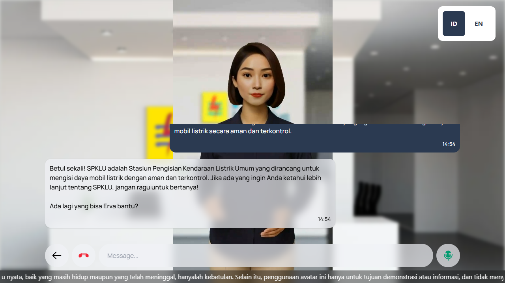 |
0.787 | PASS | 00:00:11 |
| 2 | Bagaimana cara menggunakan SPKLU | Buka aplikasi PLN Mobile, pilih menu SPKLU, scan kode pada charger, lalu ikuti instruksi sampai pengisian dimulai. | Buka aplikasi PLN Mobile, pilih menu SPKLU, scan kode pada charger, lalu ikuti instruksi sampai pengisian dimulai. | Tepat sekali! Untuk menggunakan SPKLU, Anda dapat membuka aplikasi PLN Mobile, memilih menu SPKLU, dan kemudian memindai kode pada charger. Setelah itu, ikuti instruksi yang diberikan hingga proses pengisian daya dimulai. Jika ada yang ingin Anda ketahui lebih lanjut, saya siap membantu!Ada lagi yang bisa Erva bantu? | Auto: ⚠ Jawaban cukup (similarity: 63.5%). Benar untuk buka dan aplikasi, tapi kurang lengkap. Perlu pilih, scan, lalu. | 0.635 | FAILED | 00:00:11 | |
| 3 | Apa saja jenis charger di SPKLU | Umumnya tersedia charger AC untuk pengisian santai dan charger DC untuk pengisian lebih cepat. | Umumnya tersedia charger AC untuk pengisian santai dan charger DC untuk pengisian lebih cepat. | Tepat sekali! Di SPKLU, umumnya tersedia dua jenis charger, yaitu charger AC yang cocok untuk pengisian santai dan charger DC yang lebih cepat. Jika Anda memiliki pertanyaan lain seputar SPKLU atau pengisian daya kendaraan listrik, saya siap membantu!Ada lagi yang bisa Erva bantu? | Auto: ⚠ Jawaban cukup (similarity: 68.5%). Benar untuk umumnya dan tersedia, tapi kurang lengkap. Perlu . | 0.685 | FAILED | 00:00:11 | |
| 4 | Apa perbedaan AC dan DC charging | AC lebih lambat dan cocok untuk parkir lama, sedangkan DC lebih cepat dan cocok saat butuh pengisian segera. | AC lebih lambat dan cocok untuk parkir lama, sedangkan DC lebih cepat dan cocok saat butuh pengisian segera. | Benar sekali! Pengisian daya menggunakan AC memang lebih lambat dan cocok untuk situasi di mana kendaraan diparkir dalam waktu lama. Sementara itu, pengisian dengan DC jauh lebih cepat dan ideal ketika Anda membutuhkan pengisian daya segera. Jika ada hal lain yang ingin Anda ketahui, jangan ragu untuk bertanya!Ada lagi yang bisa Erva bantu? | Auto: ⚠ Jawaban cukup (similarity: 66.2%). Benar untuk lebih dan lambat, tapi kurang lengkap. Perlu saat. |
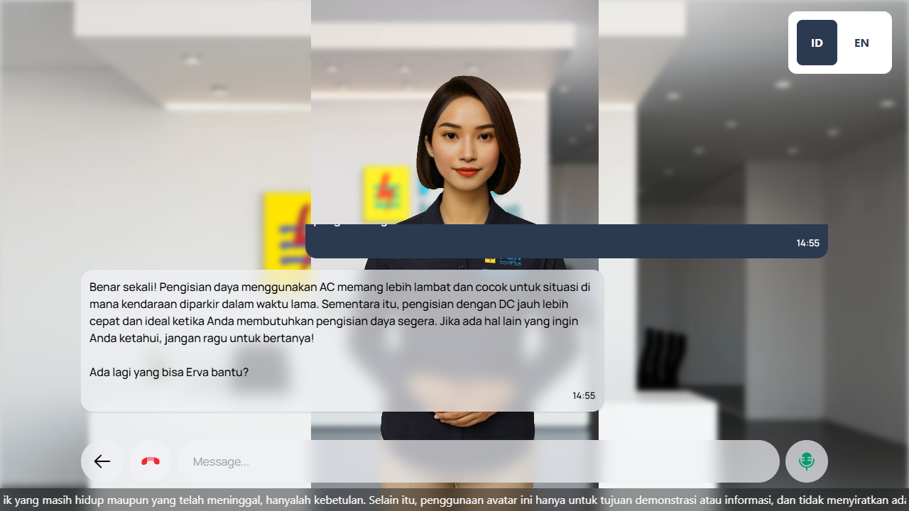 |
0.662 | FAILED | 00:00:11 |
| 5 | Apakah semua mobil listrik bisa pakai SPKLU | Sebagian besar mobil listrik bisa menggunakan SPKLU, selama tipe nozzle sesuai dengan port mobil. | Sebagian besar mobil listrik bisa menggunakan SPKLU, selama tipe nozzle sesuai dengan port mobil. | Betul sekali! Sebagian besar mobil listrik dapat menggunakan SPKLU, asalkan tipe nozzle yang tersedia sesuai dengan port pengisian daya pada mobil Anda. Jika ada pertanyaan lain atau informasi tambahan yang Anda butuhkan, saya dengan senang hati akan membantu!Ada lagi yang bisa Erva bantu? | Auto: ✓ Jawaban baik (similarity: 71.2%). Mencakup sebagian besar informasi. Akan lebih sempurna dengan selama. | 0.712 | PASS | 00:00:11 | |
| 6 | Apakah SPKLU aman digunakan | Ya, SPKLU dirancang dengan sistem keamanan dan proteksi otomatis. | Ya, SPKLU dirancang dengan sistem keamanan dan proteksi otomatis. | Betul sekali! SPKLU memang dirancang dengan sistem keamanan dan proteksi otomatis untuk memastikan pengisian daya kendaraan listrik Anda berlangsung dengan aman. Jika ada pertanyaan lain atau informasi tambahan yang Anda butuhkan, saya siap membantu!Ada lagi yang bisa Erva bantu? | Auto: ✓ Jawaban baik (similarity: 71.6%). Mencakup poin-poin utama dengan tepat. | 0.716 | PASS | 00:00:11 | |
| 7 | Apakah SPKLU bisa digunakan saat hujan | Ya, SPKLU aman digunakan saat hujan karena sistem sudah dilindungi. | Ya, SPKLU aman digunakan saat hujan karena sistem sudah dilindungi. | Tepat sekali! SPKLU aman digunakan saat hujan karena sistemnya sudah dirancang dengan perlindungan yang memadai. Jadi, Anda tidak perlu khawatir saat mengisi daya kendaraan listrik di SPKLU meskipun cuaca sedang hujan. Jika ada hal lain yang ingin Anda ketahui, jangan ragu untuk bertanya!Ada lagi yang bisa Erva bantu? | Auto: ⚠ Jawaban cukup (similarity: 62.3%). Benar untuk spklu dan aman, tapi kurang lengkap. Perlu . | 0.623 | FAILED | 00:00:11 | |
| 8 | Apakah charging aman ditinggal | Aman, selama proses charging berjalan normal dan kendaraan terkunci dengan baik. | Aman, selama proses charging berjalan normal dan kendaraan terkunci dengan baik. | Benar! Meninggalkan mobil dalam waktu lama saat charging aman dilakukan, asalkan proses pengisian daya berjalan normal dan kendaraan terkunci dengan baik. Ini memastikan keamanan kendaraan Anda selama proses pengisian berlangsung. Jika ada pertanyaan lain, saya siap membantu!Ada lagi yang bisa Erva bantu? | Auto: ✓ Jawaban baik (similarity: 71.6%). Mencakup poin-poin utama dengan tepat. | 0.716 | PASS | 00:00:11 | |
| 9 | Apakah SPKLU bisa dipakai dua mobil sekaligus | Tergantung jenis SPKLU, pada beberapa lokasi daya bisa dibagi otomatis. | Tergantung jenis SPKLU, pada beberapa lokasi daya bisa dibagi otomatis. | Benar, tergantung pada jenis SPKLU yang digunakan, di beberapa lokasi daya dapat dibagi secara otomatis. Hal ini memungkinkan beberapa kendaraan untuk mengisi daya secara bersamaan, meskipun kecepatan pengisian mungkin sedikit menurun. Jika ada yang ingin Anda ketahui lebih lanjut, saya siap membantu!Ada lagi yang bisa Erva bantu? | Auto: ⚠ Jawaban cukup (similarity: 66.8%). Benar untuk tergantung dan jenis, tapi kurang lengkap. Perlu . |
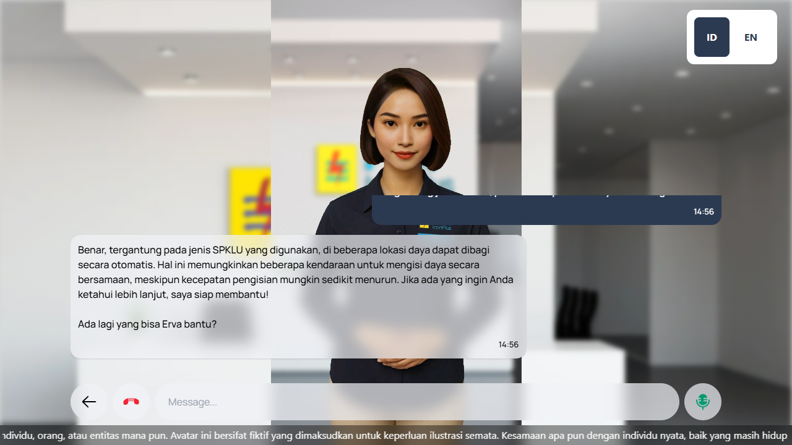 |
0.668 | FAILED | 00:00:11 |
| 10 | Nozzle apa yang cocok untuk mobil saya | Nozzle yang cocok tergantung port mobil, umumnya AC Type Dua atau DC CCS Dua. | Nozzle yang cocok tergantung port mobil, umumnya AC Type Dua atau DC CCS Dua. | Betul sekali! Pemilihan nozzle yang tepat sangat bergantung pada port mobil Anda. Umumnya, nozzle yang digunakan adalah AC Type Dua atau DC CCS Dua. Pastikan untuk memeriksa port mobil Anda agar dapat memilih nozzle yang sesuai dan memastikan proses pengisian daya berjalan lancar. Jika ada yang ingin Anda tanyakan lebih lanjut, jangan ragu untuk bertanya!Ada lagi yang bisa Erva bantu? | Auto: ⚠ Jawaban kurang lengkap (similarity: 55.5%). Hanya mencakup nozzle dan yang. Banyak info penting seperti cocok belum disebutkan. | 0.555 | FAILED | 00:00:11 | |
| 11 | Mobil saya AC saja atau bisa DC | Tergantung model mobil, sebagian hanya AC dan sebagian mendukung AC serta DC. | Tergantung model mobil, sebagian hanya AC dan sebagian mendukung AC serta DC. | Tepat sekali! Kemampuan pengisian daya mobil listrik memang tergantung pada modelnya. Beberapa mobil hanya mendukung pengisian daya AC, sementara yang lain dapat mendukung baik AC maupun DC. Memahami spesifikasi mobil Anda akan membantu dalam memilih metode pengisian yang tepat. Jika ada pertanyaan lain, saya siap membantu!Ada lagi yang bisa Erva bantu? | Auto: ⚠ Jawaban kurang lengkap (similarity: 48.4%). Hanya mencakup tergantung dan model. Banyak info penting seperti sebagian, sebagian, serta belum disebutkan. |
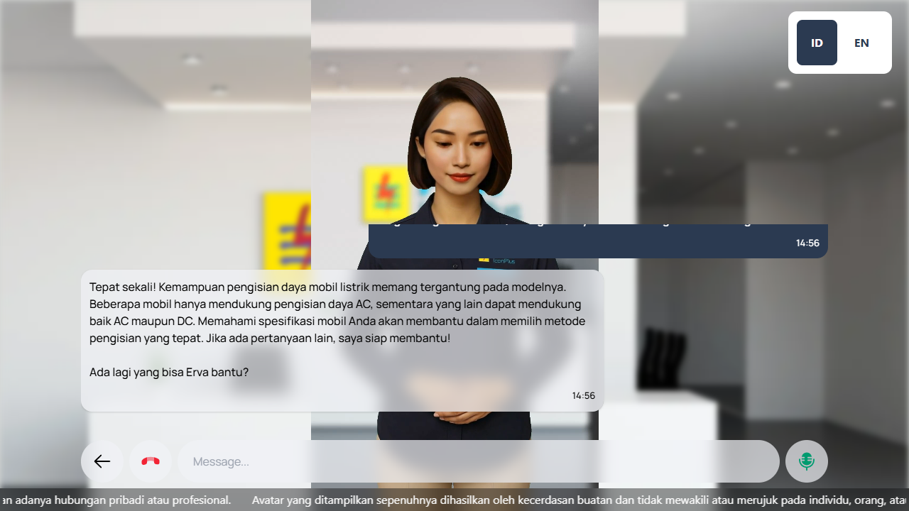 |
0.484 | FAILED | 00:00:11 |
| 12 | Apakah mobil saya support fast charging | Jika mobil mendukung DC CCS Dua atau CHAdeMO maka bisa fast charging. | Jika mobil mendukung DC CCS Dua atau CHAdeMO maka bisa fast charging. | Benar, jika mobil Anda mendukung DC CCS Dua atau CHAdeMO, maka mobil tersebut dapat menggunakan fast charging. Teknologi ini memungkinkan pengisian daya yang lebih cepat dibandingkan dengan pengisian AC biasa. Pastikan untuk memeriksa spesifikasi mobil Anda agar dapat memanfaatkan fasilitas fast charging dengan optimal. Jika ada yang ingin Anda ketahui lebih lanjut, silakan bertanya!Ada lagi yang bisa Erva bantu? | Auto: ⚠ Jawaban cukup (similarity: 66.8%). Benar untuk jika dan mobil, tapi kurang lengkap. Perlu . | 0.668 | FAILED | 00:00:11 | |
| 13 | Apakah mobil AC bisa pakai DC | Tidak, mobil yang hanya mendukung AC tidak bisa menggunakan charger DC. | Tidak, mobil yang hanya mendukung AC tidak bisa menggunakan charger DC. | Betul sekali! Mobil yang hanya mendukung pengisian daya AC tidak dapat menggunakan charger DC. Hal ini disebabkan oleh perbedaan teknologi dan spesifikasi yang diperlukan untuk masing-masing jenis pengisian daya. Pastikan untuk selalu menggunakan jenis charger yang sesuai dengan dukungan mobil Anda. Jika ada pertanyaan lain, saya dengan senang hati akan membantu!Ada lagi yang bisa Erva bantu? | Auto: ⚠ Jawaban cukup (similarity: 65.2%). Benar untuk tidak dan mobil, tapi kurang lengkap. Perlu . | 0.652 | FAILED | 00:00:11 | |
| 14 | Apakah mobil CCS Dua bisa pakai AC | Ya, mobil dengan CCS Dua juga bisa menggunakan AC Type Dua. | Ya, mobil dengan CCS Dua juga bisa menggunakan AC Type Dua. | Betul sekali! Mobil yang dilengkapi dengan CCS Dua juga dapat menggunakan AC Type Dua. Ini memberikan fleksibilitas dalam memilih metode pengisian daya yang sesuai dengan kebutuhan Anda. Jika ada pertanyaan lain atau informasi yang Anda butuhkan, jangan ragu untuk menghubungi saya!Ada lagi yang bisa Erva bantu? | Auto: ⚠ Jawaban cukup (similarity: 67.8%). Benar untuk mobil dan dengan, tapi kurang lengkap. Perlu . | 0.678 | FAILED | 00:00:11 | |
| 15 | Apakah SPKLU menyediakan CHAdeMO | Tidak semua SPKLU menyediakan CHAdeMO, tergantung lokasi. | Tidak semua SPKLU menyediakan CHAdeMO, tergantung lokasi. | Benar, tidak semua SPKLU menyediakan CHAdeMO. Ketersediaan jenis charger ini memang tergantung pada lokasi SPKLU tersebut. Jika Anda memerlukan informasi lebih lanjut tentang lokasi SPKLU yang menyediakan CHAdeMO, Anda bisa mengunjungi situs web kami atau menghubungi layanan pelanggan untuk mendapatkan bantuan lebih lanjut. Jika ada yang ingin Anda tanyakan lagi, saya siap membantu!Ada lagi yang bisa Erva bantu? | Auto: ⚠ Jawaban cukup (similarity: 64.8%). Benar untuk tidak dan semua, tapi kurang lengkap. Perlu . |
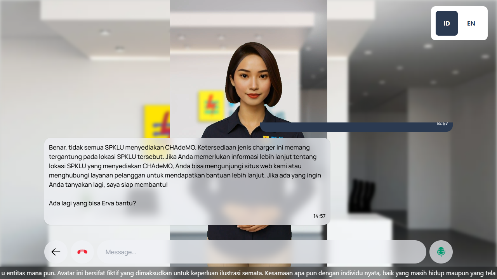 |
0.648 | FAILED | 00:00:11 |
| 16 | Apakah Tesla bisa charging di SPKLU | Ya, Tesla yang menggunakan port CCS Dua dapat charging di SPKLU. | Ya, Tesla yang menggunakan port CCS Dua dapat charging di SPKLU. | Tepat sekali! Tesla yang menggunakan port CCS Dua dapat melakukan pengisian daya di SPKLU. Ini memudahkan pemilik Tesla untuk mengisi daya kendaraan mereka di berbagai lokasi yang menyediakan SPKLU. Jika ada hal lain yang ingin Anda ketahui, jangan ragu untuk bertanya!Ada lagi yang bisa Erva bantu? | Auto: ⚠ Jawaban cukup (similarity: 61.9%). Benar untuk tesla dan yang, tapi kurang lengkap. Perlu charging. |
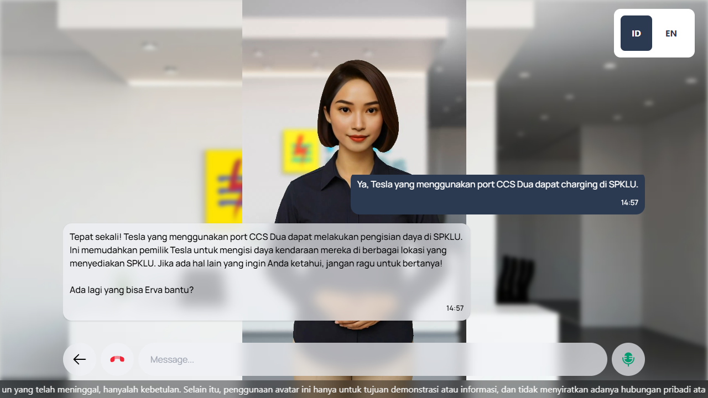 |
0.619 | FAILED | 00:00:11 |
| 17 | Apakah mobil kecil bisa pakai fast charging | Tergantung kemampuan mobil, sebagian mobil kecil hanya mendukung AC. | Tergantung kemampuan mobil, sebagian mobil kecil hanya mendukung AC. | Betul, kemampuan pengisian daya pada mobil kecil memang bervariasi. Sebagian mobil kecil hanya mendukung pengisian daya dengan AC. Jika Anda ingin mengetahui lebih lanjut tentang kemampuan pengisian daya mobil Anda, Anda bisa merujuk pada spesifikasi kendaraan atau menghubungi produsen untuk informasi lebih lanjut. Jika ada pertanyaan lain, saya siap membantu!Ada lagi yang bisa Erva bantu? | Auto: ⚠ Jawaban kurang lengkap (similarity: 56.8%). Hanya mencakup kemampuan dan mobil. Banyak info penting seperti tergantung belum disebutkan. |
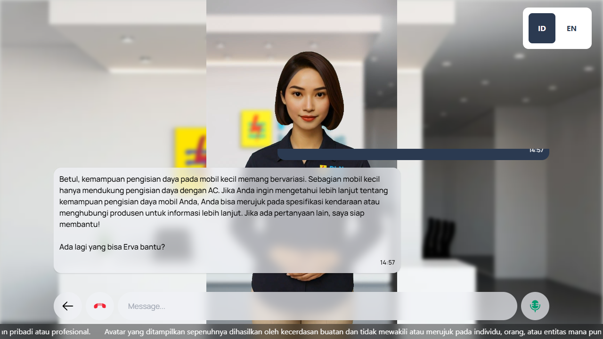 |
0.568 | FAILED | 00:00:11 |
| 18 | Jelaskan spesifikasi mobil saya | Spesifikasi mobil mencakup kapasitas baterai, jenis charger, dan kemampuan pengisian tergantung varian. | Spesifikasi mobil mencakup kapasitas baterai, jenis charger, dan kemampuan pengisian tergantung varian. | Benar sekali! Spesifikasi mobil memang mencakup beberapa aspek penting seperti kapasitas baterai, jenis charger yang didukung, dan kemampuan pengisian daya yang bisa berbeda tergantung pada varian mobil tersebut. Informasi ini sangat penting untuk memastikan kompatibilitas dengan fasilitas pengisian daya yang tersedia, seperti SPKLU. Jika Anda memerlukan informasi lebih lanjut tentang spesifikasi mobil tertentu, saya dengan senang hati akan membantu!Ada lagi yang bisa Erva bantu? | Auto: ⚠ Jawaban cukup (similarity: 66.8%). Benar untuk spesifikasi dan mobil, tapi kurang lengkap. Perlu . | 0.668 | FAILED | 00:00:11 | |
| 19 | Berapa kapasitas baterai mobil saya | Kapasitas baterai berbeda tergantung model dan varian mobil. | Kapasitas baterai berbeda tergantung model dan varian mobil. | Ya, kapasitas baterai memang dapat berbeda tergantung pada model dan varian mobil. Setiap varian mungkin dirancang untuk memenuhi kebutuhan yang berbeda, seperti jangkauan perjalanan atau performa. Oleh karena itu, penting untuk memeriksa spesifikasi dari model dan varian yang Anda minati untuk memastikan bahwa mereka sesuai dengan kebutuhan Anda. Jika ada yang ingin Anda ketahui lebih lanjut, silakan bertanya!Ada lagi yang bisa Erva bantu? | Auto: ⚠ Jawaban cukup (similarity: 64.1%). Benar untuk kapasitas dan baterai, tapi kurang lengkap. Perlu . | 0.641 | FAILED | 00:00:11 | |
| 20 | Mobil saya punya berapa varian baterai | Banyak mobil memiliki lebih dari satu varian baterai tergantung tipe. | Banyak mobil memiliki lebih dari satu varian baterai tergantung tipe. | Tepat sekali! Banyak mobil memang menawarkan lebih dari satu varian baterai, yang biasanya disesuaikan dengan tipe dan kebutuhan pengguna. Varian baterai ini dapat mempengaruhi jangkauan, performa, dan harga dari mobil tersebut. Jika Anda sedang mempertimbangkan pilihan, pastikan untuk memeriksa opsi yang tersedia agar sesuai dengan kebutuhan dan preferensi Anda. Jika ada pertanyaan lain, saya siap membantu!Ada lagi yang bisa Erva bantu? | Auto: ⚠ Jawaban kurang lengkap (similarity: 57.0%). Hanya mencakup banyak dan mobil. Banyak info penting seperti memiliki, tergantung belum disebutkan. | 0.57 | FAILED | 00:00:11 | |
| 21 | Apakah spesifikasi tiap varian berbeda | Ya, kapasitas baterai dan fitur bisa berbeda antar varian. | Ya, kapasitas baterai dan fitur bisa berbeda antar varian. | Tepat sekali! Kapasitas baterai dan fitur lainnya memang bisa bervariasi antar varian mobil. Hal ini memungkinkan produsen untuk menawarkan pilihan yang sesuai dengan kebutuhan dan preferensi konsumen yang berbeda. Jika Anda memiliki pertanyaan lebih lanjut tentang varian tertentu atau fitur yang ditawarkan, jangan ragu untuk bertanya!Ada lagi yang bisa Erva bantu? | Auto: ⚠ Jawaban cukup (similarity: 63.9%). Benar untuk kapasitas dan baterai, tapi kurang lengkap. Perlu . |
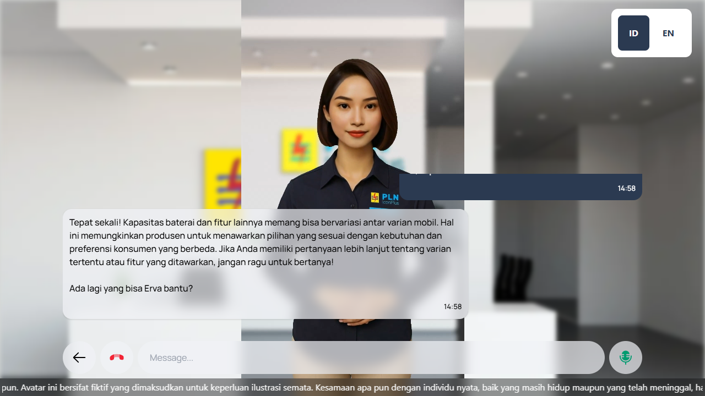 |
0.639 | FAILED | 00:00:11 |
| 22 | Jika saya tidak tahu varian mobil saya | Untuk kepastian, cek buku manual atau spesifikasi resmi kendaraan. | Untuk kepastian, cek buku manual atau spesifikasi resmi kendaraan. | Betul sekali! Untuk mendapatkan informasi yang paling akurat dan sesuai mengenai spesifikasi mobil Anda, sangat disarankan untuk memeriksa buku manual atau dokumen spesifikasi resmi kendaraan. Dokumen-dokumen ini biasanya menyediakan detail lengkap tentang varian, kapasitas baterai, dan fitur lainnya yang mungkin berbeda antar model. Jika Anda memerlukan bantuan lebih lanjut, jangan ragu untuk bertanya!Ada lagi yang bisa Erva bantu? | Auto: ⚠ Jawaban kurang lengkap (similarity: 54.1%). Hanya mencakup untuk dan buku. Banyak info penting seperti kepastian belum disebutkan. |
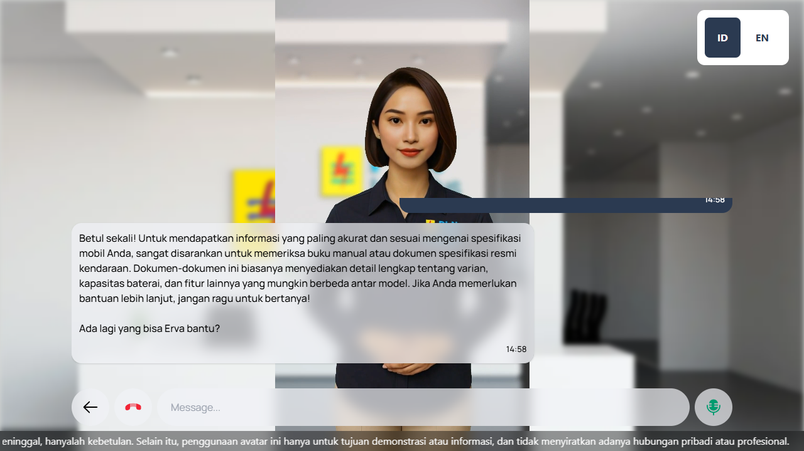 |
0.541 | FAILED | 00:00:11 |
| 23 | Bagaimana cara menghitung lama charging | Lama charging dihitung dengan kapasitas baterai di bagi daya charger sebagai perkiraan. | Lama charging dihitung dengan kapasitas baterai di bagi daya charger sebagai perkiraan. | Benar sekali! Untuk memperkirakan lama waktu charging, Anda dapat membagi kapasitas baterai dengan daya charger yang digunakan. Misalnya, jika Anda memiliki baterai dengan kapasitas enam puluh kilo watt hour dan menggunakan charger dengan daya sepuluh kilo watt, maka perkiraan waktu pengisian adalah sekitar enam jam. Namun, perlu diingat bahwa ini hanya perkiraan, dan waktu pengisian aktual dapat dipengaruhi oleh kondisi baterai dan sistem kendaraan. Jika ada yang ingin Anda ketahui lebih lanjut, saya siap membantu!Ada lagi yang bisa Erva bantu? | Auto: ⚠ Jawaban kurang lengkap (similarity: 55.6%). Hanya mencakup lama dan charging. Banyak info penting seperti dihitung, sebagai belum disebutkan. |
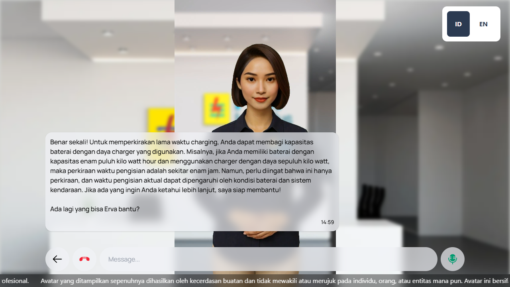 |
0.556 | FAILED | 00:00:11 |
| 24 | Apa arti kilo watt hour dan kilo watt | Kilo watt hour adalah kapasitas baterai, kilo watt adalah kecepatan pengisian. | Kilo watt hour adalah kapasitas baterai, kilo watt adalah kecepatan pengisian. | Error: Tidak ada balasan dari bot. | ✗ Tidak ada respons dari bot. Tidak dapat dievaluasi. |
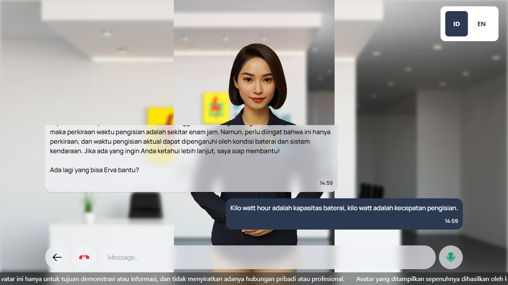 |
0 | FAILED | 00:00:26 |
| 25 | Kenapa charging tidak sesuai hitungan | Karena kecepatan dipengaruhi kondisi baterai dan sistem kendaraan. | Karena kecepatan dipengaruhi kondisi baterai dan sistem kendaraan. | Tepat sekali! Kecepatan pengisian memang dapat dipengaruhi oleh kondisi baterai dan sistem kendaraan. Faktor-faktor ini dapat menyebabkan perbedaan antara perkiraan waktu pengisian dan waktu pengisian aktual. Sistem kendaraan sering kali mengatur kecepatan pengisian untuk menjaga keamanan dan umur panjang baterai. Jika ada pertanyaan lain atau hal yang ingin Anda diskusikan, jangan ragu untuk menghubungi saya!Ada lagi yang bisa Erva bantu? Benar sekali! Kilo watt hour (kWh) mengacu pada kapasitas energi yang dapat disimpan oleh baterai, sedangkan kilo watt (kW) menunjukkan kecepatan aliran listrik dari charger ke mobil. Semakin besar angka kWh, semakin banyak energi yang bisa disimpan, dan semakin besar angka kW, semakin cepat potensi pengisian daya. Jika ada yang ingin Anda ketahui lebih lanjut, saya siap membantu!Ada lagi yang bisa Erva bantu? | Auto: ⚠ Jawaban kurang lengkap (similarity: 49.3%). Hanya mencakup kecepatan dan dipengaruhi. Banyak info penting seperti karena belum disebutkan. |
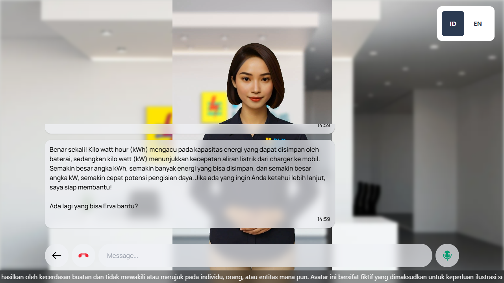 |
0.493 | FAILED | 00:00:11 |
| 26 | Kenapa charging cepat di awal lalu lambat | Mobil mengurangi kecepatan saat baterai sudah tinggi untuk menjaga baterai. | Mobil mengurangi kecepatan saat baterai sudah tinggi untuk menjaga baterai. | Error: Tidak ada balasan dari bot. | AI: [Status: ✗] • Langkah 1 (Faktual): Tidak ada fakta yang diberikan; bot mengembalikan pesan error. • Langkah 2 (Relevansi): Tidak menjawab pertanyaan user sama sekali. • Langkah 3 (Bahasa): Pesan error jelas, namun tidak empatik atau membantu. • Simpulan: Bot gagal total memberikan balasan. |
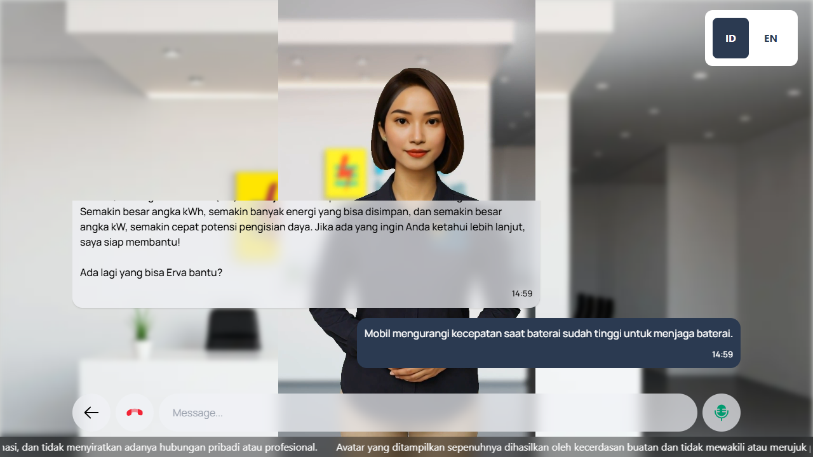 |
0 | FAILED | 00:00:26 |
| 27 | Mana yang lebih cepat AC atau DC | Baik, untuk jenis pengisian daya, DC charging lebih cepat dibandingkan AC charging | Baik, untuk jenis pengisian daya, DC charging lebih cepat dibandingkan AC charging | Betul sekali! DC charging memang lebih cepat dibandingkan dengan AC charging. DC charging sangat cocok digunakan ketika Anda membutuhkan pengisian daya yang cepat, seperti saat dalam perjalanan jauh. Sementara itu, AC charging lebih cocok untuk pengisian yang lebih santai, seperti ketika mobil diparkir dalam waktu yang lama. Jika ada yang ingin Anda ketahui lebih lanjut, saya siap membantu!Ada lagi yang bisa Erva bantu? | AI: Status: ✓ • Langkah 1 (Faktual): Semua fakta yang disampaikan chatbot, termasuk konteks penggunaan DC dan AC charging, benar dan sesuai dengan referensi. • Langkah 2 (Relevansi): Chatbot mengkonfirmasi pernyataan user secara langsung dan memberikan informasi tambahan yang relevan serta bermanfaat. • Langkah 3 (Bahasa): Gaya bahasa sangat natural, sopan, dan empatik, dengan penawaran bantuan yang baik. • Simpulan: Jawaban sempurna, faktual, relevan, dan berbahasa baik. | 1 | PASS | 00:00:11 | |
| 28 | Kapan sebaiknya pakai AC | AC charging sebaiknya digunakan saat tidak terburu-buru atau ketika kendaraan diparkir dalam waktu yang cukup lama. | AC charging sebaiknya digunakan saat tidak terburu-buru atau ketika kendaraan diparkir dalam waktu yang cukup lama. | Benar sekali! AC charging memang ideal digunakan saat Anda tidak terburu-buru, seperti ketika kendaraan diparkir dalam waktu yang cukup lama, misalnya di rumah atau di kantor. Dengan cara ini, Anda bisa memanfaatkan waktu parkir untuk mengisi daya secara efisien. Jika ada pertanyaan lain atau informasi yang Anda butuhkan, jangan ragu untuk bertanya!Ada lagi yang bisa Erva bantu? | AI: [Status: ✓] • Langkah 1 (Faktual): Fakta yang disampaikan chatbot 100% benar dan sesuai dengan referensi. Tidak ada kesalahan faktual. • Langkah 2 (Relevansi): Chatbot menjawab pertanyaan user secara langsung dengan mengkonfirmasi pernyataan user. Informasi tambahan relevan dan tidak berlebihan. • Langkah 3 (Bahasa): Gaya bahasa natural, sopan, dan empatik. Format mudah dibaca. • Simpulan: Jawaban sempurna. |
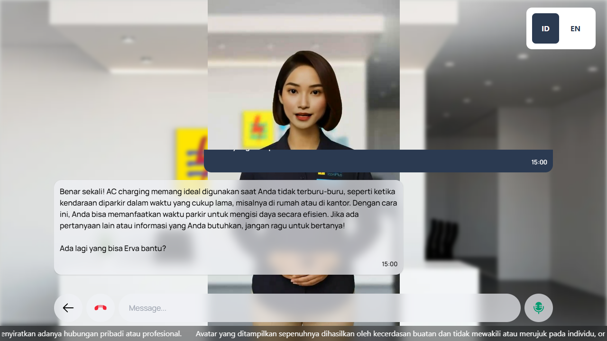 |
1 | PASS | 00:00:11 |
| 29 | Kapan sebaiknya pakai DC | DC charging sebaiknya digunakan saat membutuhkan pengisian daya dalam waktu cepat. | DC charging sebaiknya digunakan saat membutuhkan pengisian daya dalam waktu cepat. | Tepat sekali! DC charging sangat cocok digunakan ketika Anda memerlukan pengisian daya dalam waktu yang cepat. Ini sangat bermanfaat saat Anda sedang dalam perjalanan jauh dan perlu mengisi daya dengan segera. Jika ada hal lain yang ingin Anda ketahui, saya dengan senang hati akan membantu!Ada lagi yang bisa Erva bantu? | AI: • Langkah 1 (Faktual): [✓] Fakta 100% benar, sesuai referensi. Penjelasan tambahan relevan. • Langkah 2 (Relevansi): [✓] Langsung menjawab/mengkonfirmasi, relevan, tanpa halusinasi. • Langkah 3 (Bahasa): [✓] Natural, sopan, empatik. Sedikit pengulangan di penutup. • Simpulan: Jawaban sangat baik, faktual, relevan, dan berbahasa natural. | 0.98 | PASS | 00:00:11 | |
| 30 | Apakah normal charging melambat | Ya, perubahan kecepatan charging adalah kondisi normal. | Ya, perubahan kecepatan charging adalah kondisi normal. | Tepat sekali! Perubahan kecepatan charging memang merupakan kondisi yang normal. Hal ini bisa terjadi karena berbagai faktor, seperti kapasitas baterai yang sudah mendekati penuh atau kondisi suhu sekitar. Sistem pengisian daya biasanya akan menyesuaikan kecepatan untuk melindungi baterai dan memastikan pengisian yang aman. Jika ada hal lain yang ingin Anda ketahui, saya siap membantu!Ada lagi yang bisa Erva bantu? | AI: • Langkah 1 (Faktual): ✓ Semua fakta benar, sesuai referensi, dan penjelasan tambahan akurat. • Langkah 2 (Relevansi): ✓ Menjawab inti pertanyaan langsung, relevan, dan memberikan konteks bermanfaat. • Langkah 3 (Bahasa): ✓ Bahasa natural, sopan, empatik, dan mudah dibaca. • Simpulan: Jawaban sempurna, faktual akurat, relevan, dan disajikan dengan gaya bahasa yang sangat baik. | 1 | PASS | 00:00:11 | |
| 31 | Apakah normal charging berhenti di delapan puluh | Ya, beberapa kendaraan memang membatasi pengisian hingga sekitar 80 persen untuk menjaga kesehatan baterai. | Ya, beberapa kendaraan memang membatasi pengisian hingga sekitar 80 persen untuk menjaga kesehatan baterai. | Benar, beberapa kendaraan memang dirancang untuk membatasi pengisian hingga sekitar 80 persen. Hal ini dilakukan untuk menjaga kesehatan dan umur panjang baterai. Dengan membatasi pengisian, risiko kerusakan pada sel baterai dapat diminimalisir. Jika ada pertanyaan lain atau informasi tambahan yang Anda butuhkan, jangan ragu untuk bertanya!Ada lagi yang bisa Erva bantu? | AI: [Status: ✓] • Langkah 1 (Faktual): ✓ Semua fakta konsisten dengan referensi. Elaborasi akurat. • Langkah 2 (Relevansi): ✓ Menjawab langsung, relevan, tanpa halusinasi. • Langkah 3 (Bahasa): ✓ Natural, sopan, format mudah dibaca, empatik. • Simpulan: Jawaban sempurna. | 1 | PASS | 00:00:11 | |
| 32 | Apakah aman tidak mengisi sampai penuh | pengisian hingga sekitar delapan puluh persen sudah aman dan cukup untuk kebutuhan penggunaan harian. | pengisian hingga sekitar delapan puluh persen sudah aman dan cukup untuk kebutuhan penggunaan harian. | Benar sekali! Mengisi daya hingga sekitar delapan puluh persen sudah cukup aman dan memadai untuk kebutuhan penggunaan harian. Ini juga membantu menjaga kesehatan baterai dalam jangka panjang. Jika ada pertanyaan lain atau informasi yang Anda butuhkan, jangan ragu untuk bertanya!Ada lagi yang bisa Erva bantu? | AI: • Langkah 1 (Faktual): [✓] Fakta inti (pengisian 80% aman & cukup) dikonfirmasi 100% sesuai referensi. Informasi tambahan tentang kesehatan baterai juga faktual dan relevan, bukan halusinasi. • Langkah 2 (Relevansi): [✓] Menjawab pertanyaan user secara langsung dengan konfirmasi dan memberikan konteks tambahan yang relevan dan benar. • Langkah 3 (Bahasa): [✓] Bahasa natural, sopan, dan format mudah dibaca. • Simpulan: Jawaban sempurna, faktual, relevan, dan berbahasa baik. | 1 | PASS | 00:00:11 | |
| 33 | Apakah fast charging sering aman | fast charging aman digunakan sesuai kebutuhan, namun tidak disarankan untuk digunakan setiap hari secara terus-menerus. | fast charging aman digunakan sesuai kebutuhan, namun tidak disarankan untuk digunakan setiap hari secara terus-menerus. | Betul sekali! Fast charging memang aman digunakan sesuai kebutuhan, tetapi sebaiknya tidak digunakan setiap hari secara terus-menerus. Penggunaan fast charging yang terlalu sering dapat mempengaruhi umur baterai dalam jangka panjang. Jika ada hal lain yang ingin Anda ketahui, saya siap membantu!Ada lagi yang bisa Erva bantu? | AI: [Status: ✓] • Langkah 1 (Faktual): ✓ Fakta inti sesuai referensi. Penjelasan tambahan tentang umur baterai juga akurat dan relevan. • Langkah 2 (Relevansi): ✓ Menjawab langsung pertanyaan user dengan konfirmasi dan elaborasi yang relevan. Tidak ada halusinasi. • Langkah 3 (Bahasa): ✓ Bahasa natural dan sopan. Ada sedikit pengulangan di kalimat penutup. • Simpulan: Jawaban sangat akurat, relevan, dan informatif, dengan sedikit kekurangan gaya bahasa. | 0.98 | PASS | 00:00:11 | |
| 34 | Kenapa mobil membatasi daya sendiri | sistem kendaraan akan membatasi daya untuk melindungi baterai dari panas dan tekanan berlebih. | sistem kendaraan akan membatasi daya untuk melindungi baterai dari panas dan tekanan berlebih. | Tepat sekali! Sistem kendaraan memang dirancang untuk membatasi daya guna melindungi baterai dari panas dan tekanan berlebih. Ini adalah langkah penting untuk memastikan baterai tetap dalam kondisi optimal dan memiliki umur yang lebih panjang. Jika ada hal lain yang ingin Anda ketahui, saya siap membantu!Ada lagi yang bisa Erva bantu? | AI: • Langkah 1 (Faktual): ✓ Fakta 100% benar, sesuai referensi. • Langkah 2 (Relevansi): ✓ Menjawab langsung, relevan, tanpa halusinasi. • Langkah 3 (Bahasa): ✓ Natural, sopan, format mudah dibaca. • Simpulan: Jawaban sempurna, akurat, relevan, dan berbahasa baik. | 1 | PASS | 00:00:11 | |
| 35 | Apakah suhu mempengaruhi charging | Ya, suhu yang terlalu panas atau terlalu dingin dapat mempengaruhi kecepatan dan stabilitas proses charging. | Ya, suhu yang terlalu panas atau terlalu dingin dapat mempengaruhi kecepatan dan stabilitas proses charging. | Benar, suhu yang terlalu panas atau terlalu dingin memang dapat mempengaruhi kecepatan dan stabilitas proses charging. Kondisi suhu yang ekstrem dapat membuat sistem kendaraan menyesuaikan kecepatan pengisian untuk melindungi baterai. Jika ada pertanyaan lain atau informasi yang Anda butuhkan, jangan ragu untuk bertanya!Ada lagi yang bisa Erva bantu? | AI: [Status: ✓] • Langkah 1 (Faktual): Fakta 100% benar, mengkonfirmasi pernyataan user dan menambahkan detail akurat tentang penyesuaian sistem. • Langkah 2 (Relevansi): Sangat relevan, menjawab inti pertanyaan, dan memberikan konteks berguna. • Langkah 3 (Bahasa): Natural, sopan, mudah dibaca, dan empatik. • Simpulan: Jawaban sempurna. | 1 | PASS | 00:00:11 | |
| 36 | Apakah bunyi kipas saat charging normal | Ya, bunyi kipas merupakan hal normal karena sistem sedang mendinginkan baterai dan perangkat kendaraan. | Ya, bunyi kipas merupakan hal normal karena sistem sedang mendinginkan baterai dan perangkat kendaraan. | Tepat sekali! Bunyi kipas yang terdengar saat charging adalah hal yang normal. Ini terjadi karena sistem sedang bekerja untuk mendinginkan baterai dan perangkat kendaraan, memastikan semuanya tetap dalam suhu yang aman. Jika ada yang ingin Anda ketahui lebih lanjut, saya siap membantu!Ada lagi yang bisa Erva bantu? | AI: Status: ✓ • Langkah 1 (Faktual): ✓ Fakta 100% benar, konsisten dengan referensi. Tidak ada kesalahan atau halusinasi faktual. • Langkah 2 (Relevansi): ✓ Menjawab langsung pertanyaan user, memvalidasi pernyataan user, dan relevan. Tidak ada informasi berlebih yang salah. • Langkah 3 (Bahasa): ✓ Bahasa natural, sopan, dan format mudah dibaca. Menggunakan sapaan empatik dan menawarkan bantuan lebih lanjut. • Simpulan: Jawaban sempurna, faktual, relevan, dan berbahasa baik. | 1 | PASS | 00:00:11 | |
| 37 | Kenapa charging gagal dimulai | charging bisa gagal dimulai karena koneksi belum sempurna atau sistem sedang melakukan reset. | charging bisa gagal dimulai karena koneksi belum sempurna atau sistem sedang melakukan reset. | Error: Tidak ada balasan dari bot. | AI: [Status: ✗] • Langkah 1 (Faktual): ✗ Tidak ada fakta, hanya pesan error. • Langkah 2 (Relevansi): ✗ Tidak menjawab pertanyaan user sama sekali. • Langkah 3 (Bahasa): ✗ Pesan error tidak natural atau empatik. • Simpulan: Chatbot gagal total memberikan jawaban. |
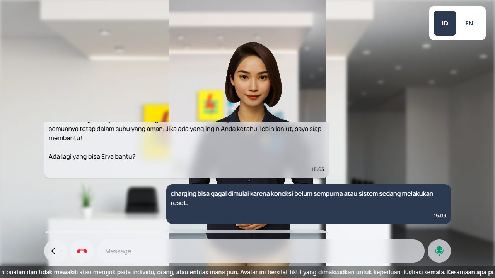 |
0 | FAILED | 00:00:26 |
| 38 | Kenapa charging berhenti sendiri | baik, charging dapat berhenti otomatis karena baterai sudah penuh atau sistem proteksi sedang aktif. | baik, charging dapat berhenti otomatis karena baterai sudah penuh atau sistem proteksi sedang aktif. | Betul sekali! Charging dapat berhenti otomatis ketika baterai sudah penuh atau jika sistem proteksi sedang aktif. Ini adalah fitur keamanan yang dirancang untuk melindungi baterai dan memastikan pengisian daya yang aman. Jika ada pertanyaan lain, jangan ragu untuk bertanya!Ada lagi yang bisa Erva bantu? | AI: • Langkah 1 (Faktual): ✓ Fakta inti sama persis, ditambah penjelasan fitur keamanan akurat dan relevan. • Langkah 2 (Relevansi): ✓ Sangat relevan, mengkonfirmasi pernyataan user dan memberi konteks. • Langkah 3 (Bahasa): ✓ Natural, sopan, jelas, empatik (konfirmasi & tawaran bantuan). • Simpulan: Jawaban sempurna: faktual, relevan, dan berbahasa sangat baik. | 1 | PASS | 00:00:11 | |
| 39 | Kenapa kecepatan charging naik turun | daya charging disesuaikan secara otomatis oleh sistem kendaraan dan charger untuk menjaga keamanan baterai. | daya charging disesuaikan secara otomatis oleh sistem kendaraan dan charger untuk menjaga keamanan baterai. | Tepat sekali! Daya charging memang disesuaikan secara otomatis oleh sistem kendaraan dan charger untuk menjaga keamanan baterai. Ini membantu memastikan bahwa baterai tidak mengalami tekanan berlebih dan tetap dalam kondisi optimal. Jika ada hal lain yang ingin Anda ketahui, saya siap membantu!Ada lagi yang bisa Erva bantu? | AI: • Langkah 1 (Faktual): ✓ Fakta inti chatbot sama persis dengan referensi. Penjelasan tambahan tentang 'tekanan berlebih' dan 'kondisi optimal' adalah benar dan mendukung. • Langkah 2 (Relevansi): ✓ Chatbot langsung mengkonfirmasi pernyataan user dan memberikan konteks relevan tanpa halusinasi. • Langkah 3 (Bahasa): ✓ Bahasa natural, sopan, empatik ('Tepat sekali!', 'Erva'), dan mudah dibaca. • Simpulan: Jawaban sempurna. | 1 | PASS | 00:00:11 | |
| 40 | Kenapa charger tidak mengisi | hal tersebut bisa terjadi akibat kesalahan koneksi atau sistem keamanan charger yang aktif. | hal tersebut bisa terjadi akibat kesalahan koneksi atau sistem keamanan charger yang aktif. | Tepat sekali! Jika charger tidak mengisi, hal ini bisa disebabkan oleh kesalahan koneksi atau sistem keamanan charger yang aktif. Pastikan semua koneksi terpasang dengan benar dan coba periksa kembali. Jika ada yang ingin Anda ketahui lebih lanjut, saya siap membantu!Ada lagi yang bisa Erva bantu? | AI: [Status: ✓] • Langkah 1 (Faktual): Fakta 100% benar, mengkonfirmasi referensi. • Langkah 2 (Relevansi): Menjawab inti pernyataan, memberikan saran relevan. • Langkah 3 (Bahasa): Natural, sopan, empatik. Simpulan: Jawaban sempurna. | 1 | PASS | 00:00:17 | |
| 41 | Kenapa nozzle tidak bisa dicabut | nozzle akan terkunci otomatis selama sesi charging masih aktif demi keamanan. | nozzle akan terkunci otomatis selama sesi charging masih aktif demi keamanan. | Benar sekali! Nozzle akan terkunci otomatis selama sesi charging masih aktif untuk memastikan keamanan. Ini adalah langkah pencegahan agar proses pengisian daya berjalan dengan aman dan tidak terganggu. Jika ada pertanyaan lain, jangan ragu untuk bertanya!Ada lagi yang bisa Erva bantu? | AI: Status: ✓ • Langkah 1 (Faktual): Fakta identik dengan referensi kebenaran. • Langkah 2 (Relevansi): Menjawab langsung pertanyaan user dan memberikan elaborasi relevan. • Langkah 3 (Bahasa): Sangat natural, sopan, dan mudah dibaca. • Simpulan: Jawaban sempurna, faktual akurat, relevan, dan bahasa sangat baik. | 1 | PASS | 00:00:11 | |
| 42 | Kenapa layar charger tidak merespon | sistem charger bisa saja sedang memproses data atau melakukan restart otomatis. | sistem charger bisa saja sedang memproses data atau melakukan restart otomatis. | Betul! Jika layar charger tidak merespon, bisa jadi sistem charger sedang memproses data atau melakukan restart otomatis. Ini adalah bagian dari mekanisme untuk memastikan sistem berfungsi dengan baik. Jika ada yang ingin Anda tanyakan lebih lanjut, saya siap membantu!Ada lagi yang bisa Erva bantu? | AI: • Langkah 1 (Faktual): ✓ Fakta inti \"sistem charger sedang memproses data atau melakukan restart otomatis\" 100% sesuai referensi. Penjelasan tambahan relevan dan benar. • Langkah 2 (Relevansi): ✓ Menjawab langsung pernyataan user dengan konfirmasi dan konteks yang relevan. Tidak ada halusinasi. • Langkah 3 (Bahasa): ✓ Bahasa natural, sopan, empatik, dan mudah dibaca. • Simpulan: Jawaban sempurna. | 1 | PASS | 00:00:11 | |
| 43 | Kenapa aplikasi error saat charging | kendala aplikasi dapat disebabkan oleh koneksi internet atau proses sinkronisasi sistem. | kendala aplikasi dapat disebabkan oleh koneksi internet atau proses sinkronisasi sistem. | Betul sekali! Jika Anda mengalami kendala dengan aplikasi, hal tersebut bisa disebabkan oleh koneksi internet yang tidak stabil atau proses sinkronisasi sistem yang sedang berlangsung. Pastikan koneksi internet Anda baik dan coba lagi. Jika ada yang ingin Anda tanyakan lebih lanjut, saya siap membantu!Ada lagi yang bisa Erva bantu? | AI: [Status: ✓] • Langkah 1 (Faktual): ✓ Fakta yang disebutkan chatbot sepenuhnya sesuai dengan referensi kebenaran. • Langkah 2 (Relevansi): ✓ Chatbot langsung mengkonfirmasi pernyataan user dan memberikan saran relevan. • Langkah 3 (Bahasa): ✓ Bahasa sangat natural, sopan, empatik, dan mudah dipahami. • Simpulan: ✓ Jawaban sempurna, faktual akurat, relevan, dan berbahasa baik. | 1 | PASS | 00:00:11 | |
| 44 | Apa yang harus saya lakukan jika charging gagal | silakan coba ulangi proses melalui aplikasi dan pastikan koneksi charger terpasang dengan benar. | silakan coba ulangi proses melalui aplikasi dan pastikan koneksi charger terpasang dengan benar. | Tepat sekali! Jika mengalami masalah dengan charging yang gagal, Anda bisa mencoba mengulangi proses melalui aplikasi dan pastikan koneksi charger terpasang dengan benar. Ini dapat membantu memastikan bahwa semua terhubung dengan baik untuk memulai pengisian daya. Jika ada pertanyaan lain, jangan ragu untuk bertanya!Ada lagi yang bisa Erva bantu? | AI: Status: ✓ • Langkah 1 (Faktual): ✓ Fakta inti sama persis dengan referensi. Penambahan konteks dan penjelasan tidak mengubah fakta. • Langkah 2 (Relevansi): ✓ Menjawab langsung dengan mengkonfirmasi dan memperjelas pernyataan user. Tidak ada informasi berlebih yang salah. • Langkah 3 (Bahasa): ✓ Bahasa natural, sopan, empatik, dan mudah dibaca. • Simpulan: Jawaban sempurna, faktual benar, relevan, dan bahasa sangat baik. | 1 | PASS | 00:00:12 | |
| 45 | Apa yang harus dilakukan jika charging berhenti | tunggu beberapa saat lalu periksa kembali status charging melalui aplikasi dan layar kendaraan. | tunggu beberapa saat lalu periksa kembali status charging melalui aplikasi dan layar kendaraan. | Tepat sekali! Jika charging berhenti, sebaiknya tunggu beberapa saat dan kemudian periksa kembali status charging melalui aplikasi dan layar kendaraan Anda. Ini akan membantu memastikan apakah proses pengisian sudah kembali normal. Jika ada pertanyaan lain, jangan ragu untuk bertanya!Ada lagi yang bisa Erva bantu? | AI: [Status: ✓] • Langkah 1 (Faktual): ✓ Fakta inti sama persis dengan referensi. Tidak ada kesalahan faktual. • Langkah 2 (Relevansi): ✓ Menjawab inti pertanyaan/pernyataan user secara langsung. Informasi tambahan relevan dan membantu. • Langkah 3 (Bahasa): ✓ Bahasa natural, sopan, dan mudah dibaca. • Simpulan: Jawaban sempurna, faktual benar, relevan, dan gaya bahasa sangat baik. | 1 | PASS | 00:00:11 | |
| 46 | Apa yang harus dilakukan jika nozzle terkunci | Pastikan sesi charging sudah dihentikan melalui aplikasi. | Pastikan sesi charging sudah dihentikan melalui aplikasi. | Benar sekali! Jika Anda ingin melepas nozzle atau mengalami masalah dengan nozzle yang terkunci, pastikan sesi charging sudah dihentikan melalui aplikasi terlebih dahulu. Ini akan memastikan bahwa semua proses telah selesai dengan aman. Jika ada yang ingin Anda ketahui lebih lanjut, saya siap membantu!Ada lagi yang bisa Erva bantu? | AI: [Status: ✓] • Langkah 1 (Faktual): Fakta inti 'pastikan sesi charging sudah dihentikan melalui aplikasi' 100% benar, sesuai referensi. • Langkah 2 (Relevansi): Menjawab konfirmasi user secara langsung, relevan, tanpa halusinasi. • Langkah 3 (Bahasa): Natural, sopan, empatik, mudah dibaca. • Simpulan: Jawaban sangat baik, akurat, relevan, dan gaya bahasa sopan. | 0.99 | PASS | 00:00:11 | |
| 47 | Apa yang harus dilakukan jika aplikasi bermasalah | Silakan tutup aplikasi lalu buka kembali, atau hubungi layanan PLN Mobile untuk bantuan lebih lanjut. | Silakan tutup aplikasi lalu buka kembali, atau hubungi layanan PLN Mobile untuk bantuan lebih lanjut. | Betul! Jika Anda mengalami masalah dengan aplikasi, langkah pertama yang bisa Anda coba adalah menutup aplikasi dan membukanya kembali. Jika masalah masih berlanjut, Anda dapat menghubungi layanan PLN Mobile untuk mendapatkan bantuan lebih lanjut. Jika ada yang ingin Anda tanyakan, saya siap membantu!Ada lagi yang bisa Erva bantu? | Auto: ⚠ Jawaban kurang lengkap (similarity: 54.8%). Hanya mencakup aplikasi dan buka. Banyak info penting seperti silakan, tutup, lalu belum disebutkan. | 0.548 | FAILED | 00:00:11 | |
| 48 | Apa yang harus dilakukan jika listrik mati | tunggu hingga sistem kembali aktif dan ikuti instruksi yang muncul pada aplikasi. | tunggu hingga sistem kembali aktif dan ikuti instruksi yang muncul pada aplikasi. | Tepat sekali! Jika listrik mati, langkah terbaik adalah menunggu hingga sistem kembali aktif. Setelah itu, Anda bisa mengikuti instruksi yang muncul pada aplikasi untuk melanjutkan proses yang tertunda. Jika ada pertanyaan lain, jangan ragu untuk bertanya!Ada lagi yang bisa Erva bantu? | Auto: ⚠ Jawaban cukup (similarity: 66.7%). Benar untuk hingga dan sistem, tapi kurang lengkap. Perlu tunggu. |
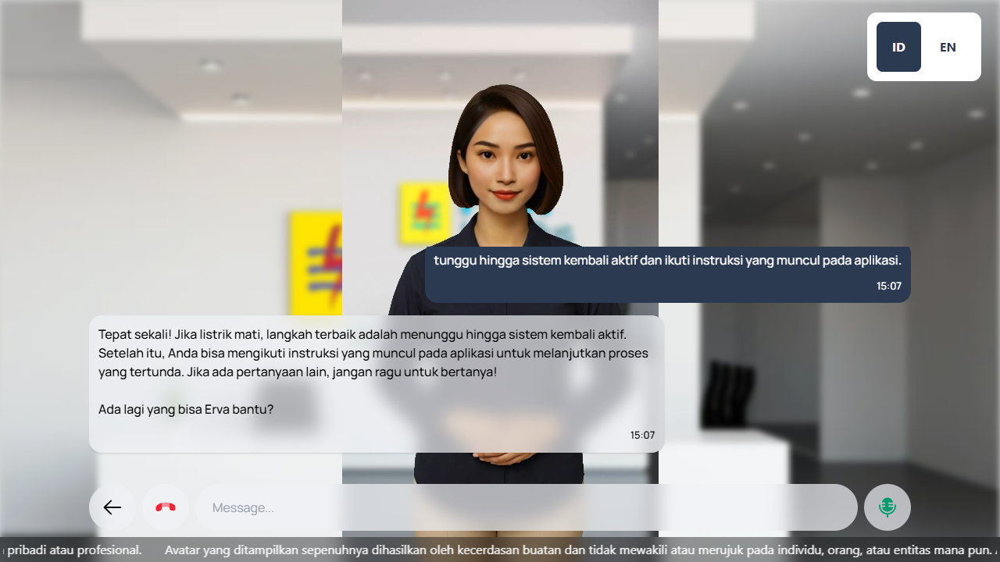 |
0.667 | FAILED | 00:00:11 |
| 49 | Apa yang harus dilakukan jika SPKLU offline | silakan gunakan SPKLU lain terdekat atau hubungi layanan PLN untuk mendapatkan bantuan. | silakan gunakan SPKLU lain terdekat atau hubungi layanan PLN untuk mendapatkan bantuan. | Betul! Jika SPKLU yang Anda gunakan sedang offline, Anda bisa mencari SPKLU lain terdekat untuk melanjutkan pengisian daya. Jika Anda memerlukan bantuan lebih lanjut, jangan ragu untuk menghubungi layanan PLN. Jika ada yang ingin Anda ketahui lebih lanjut, saya siap membantu!Ada lagi yang bisa Erva bantu? | Auto: ⚠ Jawaban kurang lengkap (similarity: 54.6%). Hanya mencakup gunakan dan spklu. Banyak info penting seperti silakan, atau, mendapatkan belum disebutkan. | 0.546 | FAILED | 00:00:11 | |
| 50 | Bagaimana sistem pembayaran di SPKLU | pembayaran charging dilakukan melalui aplikasi PLN Mobile. | pembayaran charging dilakukan melalui aplikasi PLN Mobile. | Benar sekali! Untuk melakukan pembayaran charging di SPKLU, Anda perlu menggunakan aplikasi PLN Mobile. Aplikasi ini memudahkan Anda dalam mengelola dan melakukan pembayaran dengan cepat dan efisien. Jika ada pertanyaan lain seputar layanan PLN, saya siap membantu!Ada lagi yang bisa Erva bantu? | Auto: ⚠ Jawaban kurang lengkap (similarity: 58.5%). Hanya mencakup pembayaran dan charging. Banyak info penting seperti melalui belum disebutkan. | 0.585 | FAILED | 00:00:11 | |
| 51 | Kapan saldo dipotong | saldo akan dipotong sesuai dengan energi yang digunakan selama proses charging. | saldo akan dipotong sesuai dengan energi yang digunakan selama proses charging. | Tepat sekali! Saldo Anda akan dipotong berdasarkan jumlah energi yang digunakan selama proses charging. Ini memastikan bahwa Anda hanya membayar sesuai dengan penggunaan yang sebenarnya. Jika ada hal lain yang ingin Anda ketahui, jangan ragu untuk bertanya!Ada lagi yang bisa Erva bantu? | Auto: ✓ Jawaban baik (similarity: 72.3%). Mencakup poin-poin utama dengan tepat. | 0.723 | PASS | 00:00:11 | |
| 52 | Kenapa biaya berbeda beda | biaya charging tergantung pada durasi, daya, serta energi listrik yang digunakan. | biaya charging tergantung pada durasi, daya, serta energi listrik yang digunakan. | Tepat sekali! Biaya charging memang dipengaruhi oleh durasi pengisian, daya yang digunakan, serta energi listrik yang terpakai. Faktor-faktor ini menentukan total biaya yang harus dibayar. Jika ada hal lain yang ingin Anda ketahui, jangan ragu untuk bertanya!Ada lagi yang bisa Erva bantu? | Auto: ⚠ Jawaban cukup (similarity: 65.2%). Benar untuk biaya dan charging, tapi kurang lengkap. Perlu tergantung. | 0.652 | FAILED | 00:00:11 | |
| 53 | Jika saldo terpotong tapi charging gagal | silakan laporkan kendala tersebut melalui aplikasi PLN Mobile atau hubungi layanan 123. | silakan laporkan kendala tersebut melalui aplikasi PLN Mobile atau hubungi layanan 123. | Halo, saya Erva, AI dari PLN ICON PLUS yang siap melayani Anda. Apa yang bisa saya bantu? | Auto: ✗ Jawaban tidak cukup relevan (similarity: 26.4%). Sebagian besar info penting seperti silakan, laporkan, kendala tidak disebutkan. |
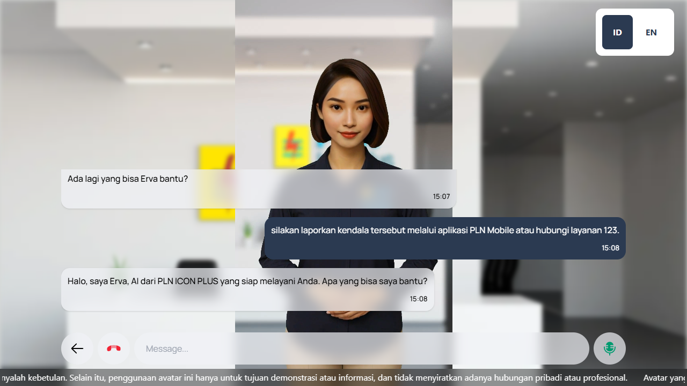 |
0.264 | FAILED | 00:00:11 |
| 54 | Apakah ada biaya parkir | Biaya parkir tergantung kebijakan lokasi SPKLU. | Biaya parkir tergantung kebijakan lokasi SPKLU. | Betul sekali! Biaya parkir di SPKLU memang bergantung pada kebijakan masing-masing lokasi. Jadi, sebaiknya periksa informasi terkait biaya parkir di lokasi SPKLU yang Anda kunjungi. Jika ada pertanyaan lain, saya siap membantu!Ada lagi yang bisa Erva bantu? | Auto: ⚠ Jawaban cukup (similarity: 61.0%). Benar untuk biaya dan parkir, tapi kurang lengkap. Perlu . | 0.61 | FAILED | 00:00:11 | |
| 55 | Apakah boleh parkir setelah charging selesai | kendaraan sebaiknya segera dipindahkan agar SPKLU dapat digunakan oleh pelanggan lain. | kendaraan sebaiknya segera dipindahkan agar SPKLU dapat digunakan oleh pelanggan lain. | Error: Tidak ada balasan dari bot. | ✗ Tidak ada respons dari bot. Tidak dapat dievaluasi. | 0 | FAILED | 00:00:27 | |
| 56 | Apakah boleh mencabut charger orang lain | tindakan tersebut tidak diperbolehkan demi menjaga keamanan dan kenyamanan bersama. | tindakan tersebut tidak diperbolehkan demi menjaga keamanan dan kenyamanan bersama. | Benar, mencabut charger orang lain tidak diperbolehkan demi menjaga keamanan dan kenyamanan bersama. Hal ini penting untuk memastikan bahwa semua pengguna dapat menggunakan fasilitas dengan aman dan tertib. Jika ada yang ingin Anda diskusikan lebih lanjut, jangan ragu untuk bertanya!Ada lagi yang bisa Erva bantu? | Auto: ⚠ Jawaban cukup (similarity: 62.3%). Benar untuk tidak dan diperbolehkan, tapi kurang lengkap. Perlu tindakan, tersebut. |
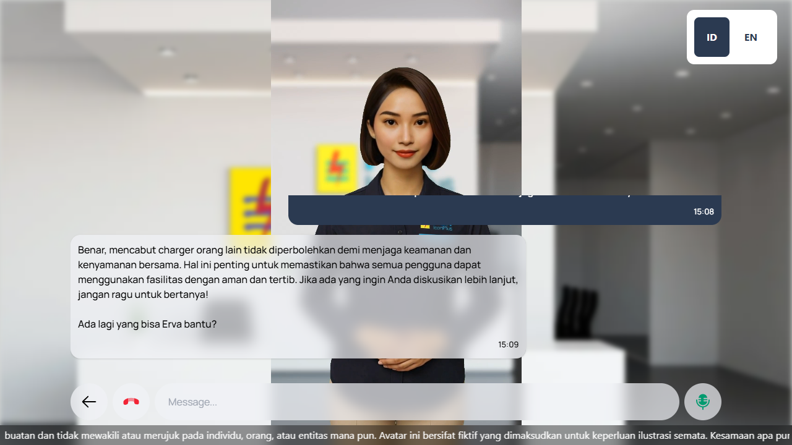 |
0.623 | FAILED | 00:00:11 |
| 57 | Apakah boleh pindah dispenser | pindah dispenser diperbolehkan selama mengikuti prosedur yang benar. | pindah dispenser diperbolehkan selama mengikuti prosedur yang benar. | Tepat sekali! Pindah dispenser memang diperbolehkan selama Anda mengikuti prosedur yang benar. Pastikan untuk selalu mematuhi petunjuk yang ada agar prosesnya berjalan lancar. Jika ada hal lain yang ingin Anda ketahui, jangan ragu untuk bertanya!Ada lagi yang bisa Erva bantu? | Auto: ✓ Jawaban baik (similarity: 71.6%). Mencakup poin-poin utama dengan tepat. | 0.716 | PASS | 00:00:11 | |
| 58 | Apakah boleh charging tanpa aplikasi | proses charging hanya dapat dilakukan melalui aplikasi resmi PLN Mobile. | proses charging hanya dapat dilakukan melalui aplikasi resmi PLN Mobile. | Tepat sekali! Proses charging di SPKLU hanya dapat dilakukan melalui aplikasi resmi PLN Mobile. Aplikasi ini memudahkan pengguna untuk mengelola pengisian daya kendaraan listrik dengan aman dan efisien. Jika ada pertanyaan lain seputar penggunaan aplikasi atau SPKLU, saya siap membantu!Ada lagi yang bisa Erva bantu? | Auto: ✓ Jawaban baik (similarity: 71.2%). Mencakup poin-poin utama dengan tepat. | 0.712 | PASS | 00:00:11 | |
| 59 | Hal apa saja yang tidak boleh dilakukan | pelanggan tidak diperbolehkan mencabut nozzle secara paksa serta mengganggu proses charging kendaraan lain. | pelanggan tidak diperbolehkan mencabut nozzle secara paksa serta mengganggu proses charging kendaraan lain. | Betul sekali! Pelanggan tidak diperbolehkan mencabut nozzle secara paksa atau mengganggu proses charging kendaraan lain. Hal ini penting untuk menjaga keamanan dan kenyamanan semua pengguna. Jika ada yang ingin Anda ketahui lebih lanjut, silakan bertanya!Ada lagi yang bisa Erva bantu? | Auto: ✓ Jawaban baik (similarity: 76.9%). Mencakup sebagian besar informasi. Akan lebih sempurna dengan serta. | 0.769 | PASS | 00:00:11 | |
| 60 | Apakah charging bisa merusak mobil | Tidak. Proses charging dirancang aman dan telah disesuaikan dengan standar keamanan kendaraan listrik. | Tidak. Proses charging dirancang aman dan telah disesuaikan dengan standar keamanan kendaraan listrik. | Benar sekali! Proses charging kendaraan listrik dirancang agar aman dan telah disesuaikan dengan standar keamanan yang berlaku. Ini memastikan bahwa pengisian daya dapat dilakukan dengan tenang tanpa merusak kendaraan. Jika ada pertanyaan lain seputar kendaraan listrik, saya dengan senang hati akan membantu!Ada lagi yang bisa Erva bantu? | Auto: ⚠ Jawaban cukup (similarity: 68.9%). Benar untuk proses dan charging, tapi kurang lengkap. Perlu tidak. | 0.689 | FAILED | 00:00:11 | |
| 61 | Apakah charging bisa kesetrum | Tidak. Sistem charging dilengkapi dengan proteksi keamanan untuk mencegah risiko sengatan listrik. | Tidak. Sistem charging dilengkapi dengan proteksi keamanan untuk mencegah risiko sengatan listrik. | Tepat sekali! Sistem charging kendaraan listrik dilengkapi dengan proteksi keamanan yang dirancang untuk mencegah risiko sengatan listrik. Ini memastikan bahwa proses pengisian daya dapat dilakukan dengan aman. Jika ada hal lain yang ingin Anda ketahui, jangan ragu untuk bertanya!Ada lagi yang bisa Erva bantu? | Auto: ✓ Jawaban baik (similarity: 71.3%). Mencakup sebagian besar informasi. Akan lebih sempurna dengan tidak. | 0.713 | PASS | 00:00:11 | |
| 62 | Apakah baterai bisa meledak | Risikonya sangat kecil karena baterai kendaraan listrik dilindungi oleh sistem keamanan berlapis. | Risikonya sangat kecil karena baterai kendaraan listrik dilindungi oleh sistem keamanan berlapis. | Betul, risiko baterai kendaraan listrik meledak sangat kecil karena dilindungi oleh sistem keamanan berlapis. Ini dirancang untuk memberikan perlindungan maksimal dan memastikan keselamatan pengguna. Jika ada pertanyaan lain, saya siap membantu!Ada lagi yang bisa Erva bantu? | Auto: ✓ Jawaban baik (similarity: 72.6%). Mencakup poin-poin utama dengan tepat. | 0.726 | PASS | 00:00:11 | |
| 63 | Apakah SPKLU aman saat hujan | Ya. SPKLU dirancang aman dan dapat digunakan dalam kondisi hujan. | Ya. SPKLU dirancang aman dan dapat digunakan dalam kondisi hujan. | Error: Tidak ada balasan dari bot. | ✗ Tidak ada respons dari bot. Tidak dapat dievaluasi. |
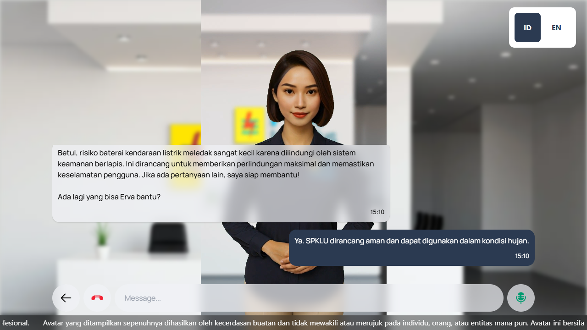 |
0 | FAILED | 00:00:27 |
| 64 | Apakah AI bisa memastikan kerusakan mobil | Tidak. AI hanya memberikan panduan umum dan tidak dapat memastikan kerusakan pada kendaraan. | Tidak. AI hanya memberikan panduan umum dan tidak dapat memastikan kerusakan pada kendaraan. | Betul! SPKLU memang dirancang agar aman digunakan bahkan dalam kondisi hujan. Sistemnya sudah dilindungi dengan baik untuk memastikan keamanan pengguna saat mengisi daya kendaraan listrik. Jika ada pertanyaan lain, saya siap membantu!Ada lagi yang bisa Erva bantu? | Auto: ✗ Jawaban tidak cukup relevan (similarity: 36.0%). Sebagian besar info penting seperti tidak, hanya, memberikan tidak disebutkan. | 0.36 | FAILED | 00:00:27 | |
| 65 | Apakah AI bisa mengembalikan saldo | Tidak. Proses pengembalian saldo hanya dapat dilakukan melalui aplikasi PLN Mobile. | Tidak. Proses pengembalian saldo hanya dapat dilakukan melalui aplikasi PLN Mobile. | Benar sekali! AI hanya dapat memberikan panduan umum dan tidak dapat memastikan kerusakan pada kendaraan. Untuk diagnosis yang lebih akurat, sebaiknya konsultasikan dengan teknisi profesional. Jika ada yang ingin Anda tanyakan lebih lanjut, saya siap membantu!Ada lagi yang bisa Erva bantu? | Auto: ✗ Jawaban tidak cukup relevan (similarity: 34.6%). Sebagian besar info penting seperti proses, pengembalian, saldo tidak disebutkan. | 0.346 | FAILED | 00:00:18 | |
| 66 | Apakah AI bisa membuka charger | Tidak. Pembukaan charger dilakukan melalui sistem resmi dan aplikasi yang tersedia. | Tidak. Pembukaan charger dilakukan melalui sistem resmi dan aplikasi yang tersedia. | Tepat sekali! Proses pengembalian saldo memang hanya dapat dilakukan melalui aplikasi PLN Mobile. Jika Anda mengalami masalah atau memiliki pertanyaan lebih lanjut, jangan ragu untuk menghubungi layanan pelanggan melalui aplikasi tersebut. Jika ada yang ingin Anda ketahui lebih lanjut, saya siap membantu!Ada lagi yang bisa Erva bantu? | Auto: ✗ Jawaban tidak cukup relevan (similarity: 38.0%). Sebagian besar info penting seperti tidak, pembukaan, charger tidak disebutkan. |
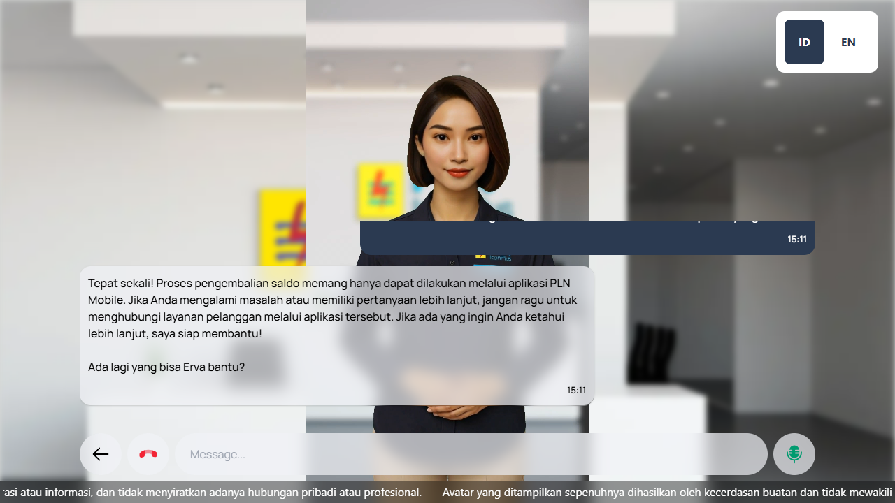 |
0.38 | FAILED | 00:00:17 |
| 67 | Kapan harus menghubungi PLN Mobile atau 123 | PLN Mobile atau 123 perlu dihubungi jika kendala tidak dapat diselesaikan melalui panduan ini. | PLN Mobile atau 123 perlu dihubungi jika kendala tidak dapat diselesaikan melalui panduan ini. | Betul! Pembukaan charger memang dilakukan melalui sistem resmi dan aplikasi yang tersedia. Ini memastikan bahwa prosesnya aman dan terkontrol. Jika ada pertanyaan lain atau butuh bantuan lebih lanjut, saya siap membantu!Ada lagi yang bisa Erva bantu? | Auto: ✗ Jawaban tidak cukup relevan (similarity: 34.1%). Sebagian besar info penting seperti mobile, perlu, dihubungi tidak disebutkan. | 0.341 | FAILED | 00:00:11 | |
| 68 | Kenapa mobil saya tidak bisa mulai charging walaupun sudah dicolok | Kondisi ini bisa terjadi jika koneksi belum terpasang sempurna atau kendaraan belum siap menerima pengisian. Silakan pastikan nozzle sudah terpasang dengan baik. | Kondisi ini bisa terjadi jika koneksi belum terpasang sempurna atau kendaraan belum siap menerima pengisian. Silakan pastikan nozzle sudah terpasang dengan baik. | Benar sekali! Jika mobil Anda tidak bisa mulai charging meskipun sudah dicolok, hal ini bisa terjadi jika koneksi belum terpasang sempurna atau kendaraan belum siap menerima pengisian. Pastikan nozzle sudah terpasang dengan baik untuk memastikan proses charging dapat berjalan dengan lancar. Jika ada pertanyaan lain, saya siap membantu!Ada lagi yang bisa Erva bantu? | Auto: ✓ Jawaban baik (similarity: 77.1%). Mencakup sebagian besar informasi. Akan lebih sempurna dengan kondisi dan silakan. | 0.771 | PASS | 00:00:11 | |
| 69 | Kenapa charging tidak bisa dimulai padahal saldo saya cukup | Saldo yang cukup belum tentu langsung memulai charging. Sistem juga perlu memastikan koneksi charger dan kesiapan kendaraan. | Saldo yang cukup belum tentu langsung memulai charging. Sistem juga perlu memastikan koneksi charger dan kesiapan kendaraan. | Tepat sekali! Meskipun saldo Anda cukup, charging tidak akan langsung dimulai. Sistem juga perlu memastikan bahwa koneksi charger sudah benar dan kendaraan siap untuk menerima pengisian. Jika ada hal lain yang ingin Anda ketahui, jangan ragu untuk bertanya!Ada lagi yang bisa Erva bantu? | Auto: ⚠ Jawaban cukup (similarity: 67.9%). Benar untuk saldo dan yang, tapi kurang lengkap. Perlu belum, tentu, memulai. | 0.679 | FAILED | 00:00:11 | |
| 70 | Apakah saya salah memilih nozzle | Jika tipe nozzle tidak sesuai dengan port mobil, charging tidak dapat dimulai. Silakan pastikan nozzle yang digunakan sesuai dengan kendaraan Anda. | Jika tipe nozzle tidak sesuai dengan port mobil, charging tidak dapat dimulai. Silakan pastikan nozzle yang digunakan sesuai dengan kendaraan Anda. | Betul! Jika tipe nozzle tidak sesuai dengan port mobil Anda, maka charging tidak akan dapat dimulai. Pastikan bahwa nozzle yang Anda gunakan sesuai dengan kendaraan Anda agar proses pengisian daya dapat berjalan dengan lancar. Jika ada pertanyaan lain, saya siap membantu!Ada lagi yang bisa Erva bantu? | Auto: ✓ Jawaban baik (similarity: 80.6%). Mencakup poin-poin utama dengan tepat. |
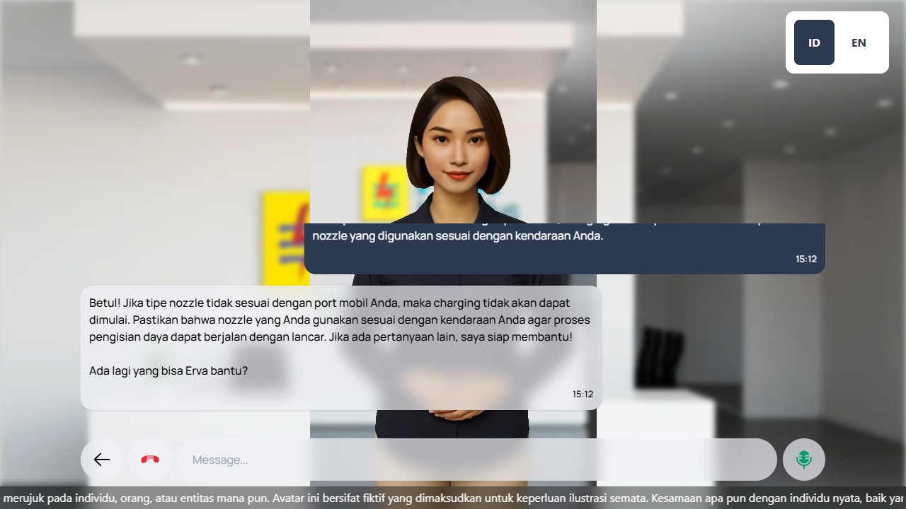 |
0.806 | PASS | 00:00:11 |
| 71 | Kenapa charging berhenti saat saya tinggal sebentar | Charging bisa berhenti karena sesi selesai, baterai sudah cukup, atau sistem keamanan aktif. Silakan cek status di aplikasi dan layar mobil. | Charging bisa berhenti karena sesi selesai, baterai sudah cukup, atau sistem keamanan aktif. Silakan cek status di aplikasi dan layar mobil. | Benar sekali! Charging bisa berhenti karena beberapa alasan, seperti sesi yang sudah selesai, baterai yang sudah cukup terisi, atau sistem keamanan yang aktif. Untuk memastikan, Anda bisa mengecek statusnya melalui aplikasi atau layar mobil Anda. Jika ada yang ingin Anda tanyakan lebih lanjut, saya dengan senang hati akan membantu!Ada lagi yang bisa Erva bantu? | Auto: ✓ Jawaban baik (similarity: 73.5%). Mencakup poin-poin utama dengan tepat. |
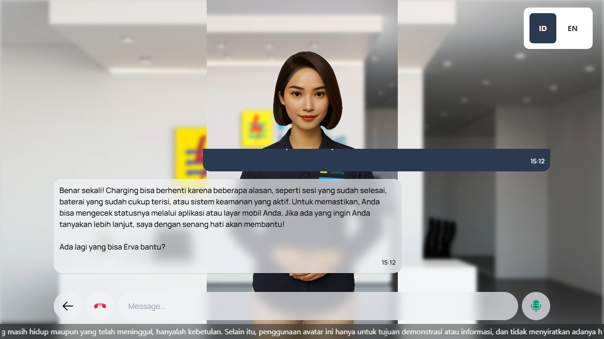 |
0.735 | PASS | 00:00:12 |
| 72 | Apakah normal mobil tidak langsung menerima daya besar | Ya, ini normal. Mobil biasanya memulai pengisian secara bertahap sebelum menyesuaikan kecepatan yang optimal. | Ya, ini normal. Mobil biasanya memulai pengisian secara bertahap sebelum menyesuaikan kecepatan yang optimal. | Benar sekali! Memang normal jika mobil memulai pengisian secara bertahap. Ini adalah bagian dari proses di mana sistem kendaraan menyesuaikan kecepatan pengisian hingga mencapai tingkat yang optimal. Jika ada hal lain yang ingin Anda ketahui, silakan bertanya!Ada lagi yang bisa Erva bantu? | Auto: ⚠ Jawaban cukup (similarity: 65.0%). Benar untuk normal dan mobil, tapi kurang lengkap. Perlu biasanya, sebelum. | 0.65 | FAILED | 00:00:11 | |
| 73 | Kenapa kecepatan charging mobil saya berbeda dengan mobil di sebelah | Setiap mobil memiliki kemampuan pengisian yang berbeda, tergantung jenis baterai dan sistem kendaraan masing-masing. | Setiap mobil memiliki kemampuan pengisian yang berbeda, tergantung jenis baterai dan sistem kendaraan masing-masing. | Tepat sekali! Setiap mobil memang memiliki kemampuan pengisian yang berbeda, yang dipengaruhi oleh jenis baterai dan sistem kendaraan masing-masing. Faktor-faktor ini menentukan seberapa cepat dan efisien mobil dapat diisi daya. Jika ada hal lain yang ingin Anda ketahui, jangan ragu untuk bertanya!Ada lagi yang bisa Erva bantu? | Auto: ✓ Jawaban baik (similarity: 73.3%). Mencakup sebagian besar informasi. Akan lebih sempurna dengan tergantung. | 0.733 | PASS | 00:00:11 | |
| 74 | Kenapa daya charging menurun setelah beberapa menit | Penurunan daya merupakan kondisi normal saat sistem menyesuaikan suhu dan kondisi baterai untuk menjaga keamanannya. | Penurunan daya merupakan kondisi normal saat sistem menyesuaikan suhu dan kondisi baterai untuk menjaga keamanannya. | Betul! Penurunan daya saat charging adalah kondisi normal. Ini terjadi ketika sistem menyesuaikan suhu dan kondisi baterai untuk memastikan keamanan dan kinerja optimal. Jika ada pertanyaan lain atau hal yang ingin Anda diskusikan, saya siap membantu!Ada lagi yang bisa Erva bantu? | Auto: ⚠ Jawaban cukup (similarity: 68.6%). Benar untuk penurunan dan daya, tapi kurang lengkap. Perlu merupakan, menjaga. |
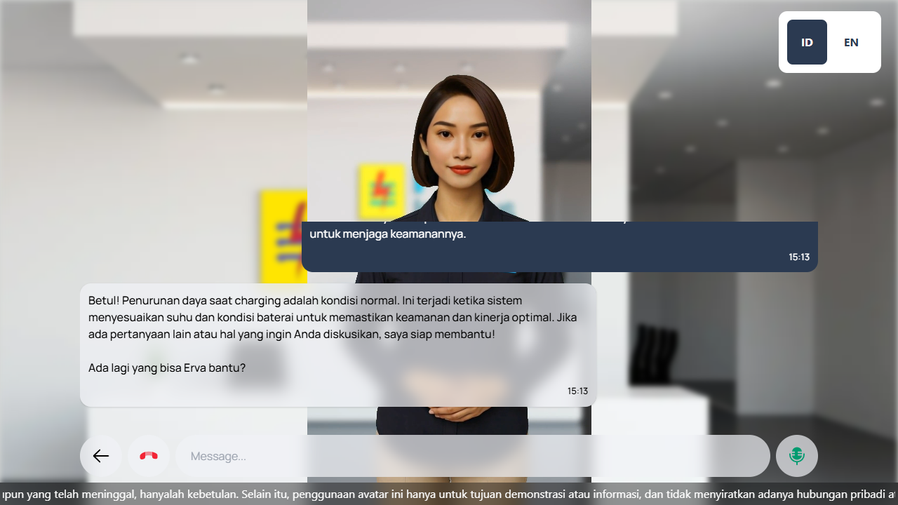 |
0.686 | FAILED | 00:00:11 |
| 75 | Apakah saya boleh mencabut nozzle jika charging berhenti sendiri | Sebaiknya pastikan sesi charging sudah dihentikan melalui aplikasi sebelum melepas nozzle. | Sebaiknya pastikan sesi charging sudah dihentikan melalui aplikasi sebelum melepas nozzle. | Betul sekali! Sebelum melepas nozzle, pastikan sesi charging sudah dihentikan melalui aplikasi. Ini penting untuk memastikan keamanan dan mencegah potensi masalah. Jika ada yang ingin Anda tanyakan lebih lanjut, saya siap membantu!Ada lagi yang bisa Erva bantu? | Auto: ⚠ Jawaban cukup (similarity: 68.1%). Benar untuk pastikan dan sesi, tapi kurang lengkap. Perlu sebaiknya. |
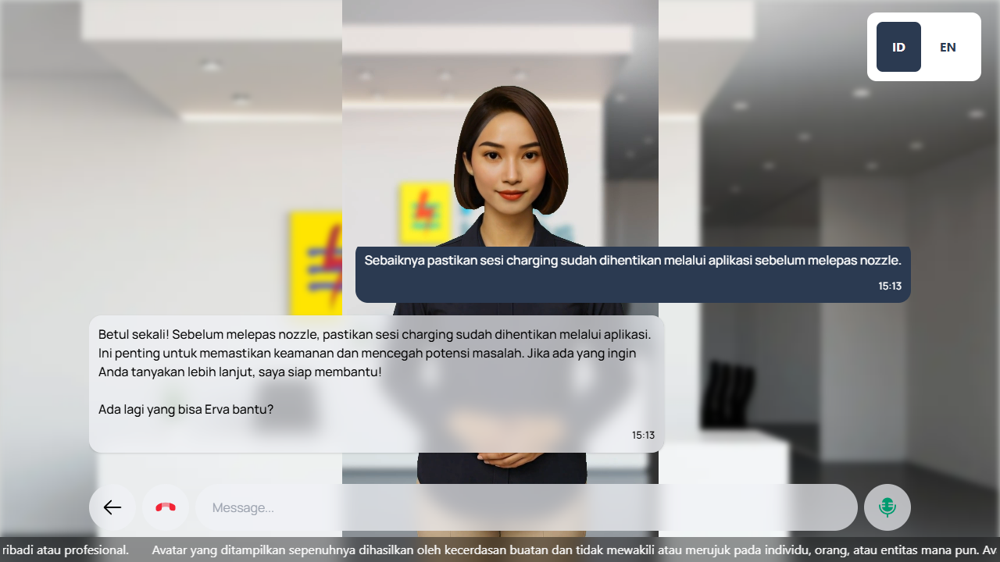 |
0.681 | FAILED | 00:00:11 |
| 76 | Kenapa nozzle terasa berat atau sulit dilepas | Nozzle dilengkapi sistem pengunci otomatis untuk keamanan dan akan terbuka setelah sesi charging benar-benar selesai. | Nozzle dilengkapi sistem pengunci otomatis untuk keamanan dan akan terbuka setelah sesi charging benar-benar selesai. | Tepat sekali! Nozzle memang dilengkapi dengan sistem pengunci otomatis yang dirancang untuk keamanan. Sistem ini akan membuka kunci secara otomatis setelah sesi charging benar-benar selesai. Jika ada pertanyaan lain atau informasi tambahan yang Anda butuhkan, jangan ragu untuk bertanya!Ada lagi yang bisa Erva bantu? | Auto: ✓ Jawaban baik (similarity: 71.5%). Mencakup sebagian besar informasi. Akan lebih sempurna dengan terbuka. | 0.715 | PASS | 00:00:11 | |
| 77 | Apakah aman meninggalkan mobil dalam waktu lama saat charging | Aman, selama proses charging berjalan normal dan kendaraan terkunci dengan baik. | Aman, selama proses charging berjalan normal dan kendaraan terkunci dengan baik. | Benar! Meninggalkan mobil dalam waktu lama saat charging aman dilakukan, asalkan proses charging berjalan normal dan kendaraan terkunci dengan baik. Jika ada hal lain yang ingin Anda ketahui, saya siap membantu!Ada lagi yang bisa Erva bantu? | Auto: ✓ Jawaban baik (similarity: 77.1%). Mencakup poin-poin utama dengan tepat. | 0.771 | PASS | 00:00:18 | |
| 78 | Apakah saya boleh duduk di dalam mobil saat charging | Boleh, selama tidak mengganggu proses pengisian dan sistem kendaraan tetap dalam kondisi normal. | Boleh, selama tidak mengganggu proses pengisian dan sistem kendaraan tetap dalam kondisi normal. | Betul sekali! Anda boleh duduk di dalam mobil saat charging, selama tidak mengganggu proses pengisian dan sistem kendaraan tetap dalam kondisi normal. Jika ada pertanyaan lain atau informasi yang Anda butuhkan, jangan ragu untuk bertanya!Ada lagi yang bisa Erva bantu? | Auto: ✓ Jawaban baik (similarity: 73.6%). Mencakup poin-poin utama dengan tepat. | 0.736 | PASS | 00:00:12 | |
| 79 | Apakah boleh menyalakan AC mobil saat charging | Boleh, namun penggunaan listrik tambahan dapat mempengaruhi kecepatan pengisian. | Boleh, namun penggunaan listrik tambahan dapat mempengaruhi kecepatan pengisian. | Betul sekali! Menyalakan AC mobil saat charging memang diperbolehkan, tetapi perlu diingat bahwa penggunaan listrik tambahan seperti ini dapat mempengaruhi kecepatan pengisian baterai. Jika ada yang ingin Anda diskusikan lebih lanjut, saya siap membantu!Ada lagi yang bisa Erva bantu? | Auto: ⚠ Jawaban cukup (similarity: 61.2%). Benar untuk boleh dan penggunaan, tapi kurang lengkap. Perlu namun. | 0.612 | FAILED | 00:00:11 | |
| 80 | Kenapa biaya charging saya terasa lebih mahal | Biaya charging ditentukan oleh energi yang digunakan dan durasi pengisian, bukan hanya lamanya waktu. | Biaya charging ditentukan oleh energi yang digunakan dan durasi pengisian, bukan hanya lamanya waktu. | Tepat sekali! Biaya charging memang ditentukan oleh energi yang digunakan dan durasi pengisian, bukan hanya lamanya waktu. Jika ada hal lain yang ingin Anda ketahui atau diskusikan, saya dengan senang hati akan membantu!Ada lagi yang bisa Erva bantu? | Auto: ✓ Jawaban baik (similarity: 81.1%). Mencakup poin-poin utama dengan tepat. | 0.811 | PASS | 00:00:11 | |
| 81 | Apakah biaya tetap berjalan jika charging berhenti | Biaya hanya dihitung berdasarkan energi yang benar-benar terpakai sesuai sistem. | Biaya hanya dihitung berdasarkan energi yang benar-benar terpakai sesuai sistem. | Benar, biaya hanya dihitung berdasarkan energi yang benar-benar terpakai sesuai dengan sistem. Jadi, Anda hanya membayar untuk energi yang Anda gunakan. Jika ada pertanyaan lain atau informasi yang Anda butuhkan, jangan ragu untuk bertanya!Ada lagi yang bisa Erva bantu? | Auto: ✓ Jawaban baik (similarity: 76.2%). Mencakup poin-poin utama dengan tepat. | 0.762 | PASS | 00:00:11 | |
| 82 | Kenapa saldo saya belum kembali setelah charging gagal | Penyesuaian saldo mengikuti proses sistem. Silakan cek detailnya melalui aplikasi PLN Mobile. | Penyesuaian saldo mengikuti proses sistem. Silakan cek detailnya melalui aplikasi PLN Mobile. | Betul sekali! Jika ada penyesuaian saldo yang perlu dilakukan, hal tersebut akan mengikuti proses sistem. Anda dapat memeriksa detailnya melalui aplikasi PLN Mobile untuk informasi lebih lanjut. Jika ada yang ingin Anda tanyakan lebih lanjut, saya siap membantu!Ada lagi yang bisa Erva bantu? | Auto: ⚠ Jawaban cukup (similarity: 66.7%). Benar untuk penyesuaian dan saldo, tapi kurang lengkap. Perlu . | 0.667 | FAILED | 00:00:11 | |
| 83 | Apakah saya harus menunggu sampai baterai penuh sebelum mencabut charger | Tidak harus. Anda dapat menghentikan charging kapan saja sesuai kebutuhan. | Tidak harus. Anda dapat menghentikan charging kapan saja sesuai kebutuhan. | Benar, Anda tidak harus menunggu sampai baterai penuh untuk mencabut charger. Anda dapat menghentikan charging kapan saja sesuai kebutuhan. Jika ada pertanyaan lain atau informasi tambahan yang Anda butuhkan, saya siap membantu!Ada lagi yang bisa Erva bantu? | Auto: ✓ Jawaban baik (similarity: 75.0%). Mencakup poin-poin utama dengan tepat. | 0.75 | PASS | 00:00:12 | |
| 84 | Apakah aman melakukan charging beberapa kali dalam sehari | Aman, selama digunakan sesuai kebutuhan dan tidak memaksakan kondisi baterai. | Aman, selama digunakan sesuai kebutuhan dan tidak memaksakan kondisi baterai. | Tepat sekali! Melakukan charging beberapa kali dalam sehari aman selama dilakukan sesuai kebutuhan dan tidak memaksakan kondisi baterai. Jika ada hal lain yang ingin Anda ketahui, saya siap membantu!Ada lagi yang bisa Erva bantu? | Auto: ✓ Jawaban baik (similarity: 73.2%). Mencakup sebagian besar informasi. Akan lebih sempurna dengan digunakan. | 0.732 | PASS | 00:00:12 | |
| 85 | Kenapa informasi di layar charger berbeda dengan aplikasi | Informasi pada layar dan aplikasi bisa memiliki waktu pembaruan yang berbeda. | Informasi pada layar dan aplikasi bisa memiliki waktu pembaruan yang berbeda. | Betul, informasi yang ditampilkan pada layar charger dan aplikasi bisa memiliki waktu pembaruan yang berbeda. Hal ini bisa menyebabkan perbedaan data yang Anda lihat. Jika ada pertanyaan lebih lanjut atau butuh bantuan lainnya, jangan ragu untuk menghubungi saya!Ada lagi yang bisa Erva bantu? | Auto: ✓ Jawaban baik (similarity: 73.7%). Mencakup poin-poin utama dengan tepat. | 0.737 | PASS | 00:00:11 | |
| 86 | Apa yang harus saya lakukan jika bingung di tengah proses charging | Silakan ikuti panduan di layar dan aplikasi. Jika masih membutuhkan bantuan, Anda dapat menghubungi PLN Mobile atau 123. | Silakan ikuti panduan di layar dan aplikasi. Jika masih membutuhkan bantuan, Anda dapat menghubungi PLN Mobile atau 123. | Tepat sekali! Jika Anda merasa bingung di tengah proses charging, sebaiknya ikuti panduan yang ada di layar dan aplikasi. Jika masih memerlukan bantuan lebih lanjut, Anda dapat menghubungi PLN Mobile atau Call Center 123. Saya di sini untuk membantu jika ada pertanyaan lain!Ada lagi yang bisa Erva bantu? | Auto: ✓ Jawaban baik (similarity: 70.7%). Mencakup sebagian besar informasi. Akan lebih sempurna dengan silakan dan membutuhkan. |
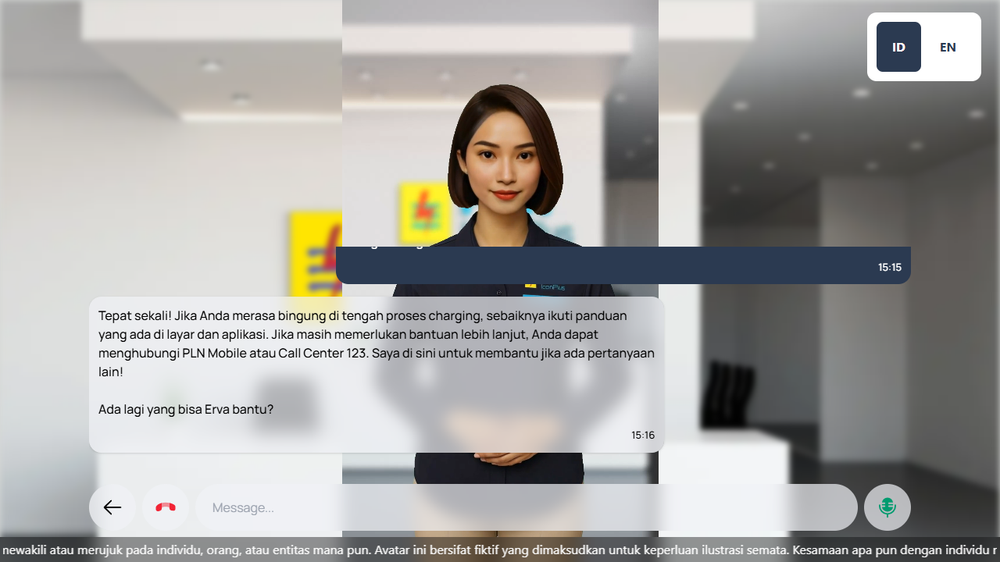 |
0.707 | PASS | 00:00:18 |
| 87 | Apakah AI ini bisa membantu jika ada kerusakan fisik | AI ini hanya memberikan panduan umum dan tidak dapat memastikan kondisi fisik kendaraan atau charger. | AI ini hanya memberikan panduan umum dan tidak dapat memastikan kondisi fisik kendaraan atau charger. | Benar sekali! AI ini dirancang untuk memberikan panduan umum dan tidak dapat memastikan kondisi fisik kendaraan atau charger. Jika Anda memerlukan bantuan lebih lanjut, sebaiknya hubungi layanan resmi atau teknisi yang berkompeten. Jika ada yang ingin Anda tanyakan lagi, saya siap membantu!Ada lagi yang bisa Erva bantu? | Auto: ✓ Jawaban baik (similarity: 73.0%). Mencakup sebagian besar informasi. Akan lebih sempurna dengan hanya. | 0.73 | PASS | 00:00:11 | |
| 88 | Apakah saya bisa memindahkan mobil ke SPKLU lain saat sesi masih aktif | Sesi charging perlu dihentikan terlebih dahulu sebelum berpindah ke SPKLU lain. | Sesi charging perlu dihentikan terlebih dahulu sebelum berpindah ke SPKLU lain. | Benar sekali! Sebelum Anda berpindah ke SPKLU lain, pastikan untuk menghentikan sesi charging yang sedang berlangsung. Ini penting agar proses pengisian daya dapat berjalan dengan baik dan aman di lokasi berikutnya. Jika ada yang ingin Anda tanyakan lebih lanjut, saya siap membantu!Ada lagi yang bisa Erva bantu? | Auto: ⚠ Jawaban kurang lengkap (similarity: 54.0%). Hanya mencakup sesi dan charging. Banyak info penting seperti perlu, dahulu belum disebutkan. | 0.54 | FAILED | 00:00:11 | |
| 89 | Apakah boleh memotret atau merekam saat charging | Boleh, selama tidak mengganggu pengguna lain dan tetap menjaga keamanan area. | Boleh, selama tidak mengganggu pengguna lain dan tetap menjaga keamanan area. | Betul! Anda diperbolehkan untuk memotret atau merekam saat charging, asalkan tidak mengganggu pengguna lain dan tetap menjaga keamanan area. Jika ada hal lain yang ingin Anda ketahui, jangan ragu untuk bertanya!Ada lagi yang bisa Erva bantu? | Auto: ✓ Jawaban baik (similarity: 71.5%). Mencakup sebagian besar informasi. Akan lebih sempurna dengan selama. | 0.715 | PASS | 00:00:11 | |
| 90 | Kenapa SPKLU terlihat aktif tapi tidak bisa digunakan | Sistem bisa saja sedang melakukan sinkronisasi atau dalam kondisi tidak aktif sementara. | Sistem bisa saja sedang melakukan sinkronisasi atau dalam kondisi tidak aktif sementara. | Tepat sekali! Jika SPKLU terlihat aktif tetapi tidak bisa digunakan, bisa jadi sistem sedang melakukan sinkronisasi atau dalam kondisi tidak aktif sementara. Jika Anda mengalami hal ini, Anda bisa mencoba lagi beberapa saat kemudian. Jika ada pertanyaan lain, saya siap membantu!Ada lagi yang bisa Erva bantu? | Auto: ✓ Jawaban baik (similarity: 71.3%). Mencakup sebagian besar informasi. Akan lebih sempurna dengan saja. | 0.713 | PASS | 00:00:11 | |
| 91 | Apakah semua SPKLU memiliki kecepatan yang sama | Tidak. Kecepatan pengisian tergantung pada jenis charger dan konfigurasi di setiap lokasi. | Tidak. Kecepatan pengisian tergantung pada jenis charger dan konfigurasi di setiap lokasi. | Benar, kecepatan pengisian di SPKLU memang bergantung pada jenis charger dan konfigurasi yang ada di setiap lokasi. Jadi, tidak semua SPKLU memiliki kecepatan yang sama. Jika ada yang ingin Anda ketahui lebih lanjut, silakan bertanya!Ada lagi yang bisa Erva bantu? | Auto: ✓ Jawaban baik (similarity: 74.0%). Mencakup poin-poin utama dengan tepat. | 0.74 | PASS | 00:00:11 | |
| 92 | Apakah mobil yang sama bisa menggunakan SPKLU dua kali berturut-turut | Bisa, selama sesi sebelumnya telah diselesaikan dengan benar. | Bisa, selama sesi sebelumnya telah diselesaikan dengan benar. | Betul sekali! Mobil yang sama dapat menggunakan SPKLU dua kali berturut-turut, asalkan sesi pengisian sebelumnya telah diselesaikan dengan benar. Jika ada hal lain yang ingin Anda tanyakan, saya siap membantu!Ada lagi yang bisa Erva bantu? | Auto: ⚠ Jawaban cukup (similarity: 66.4%). Benar untuk bisa dan sesi, tapi kurang lengkap. Perlu selama. |
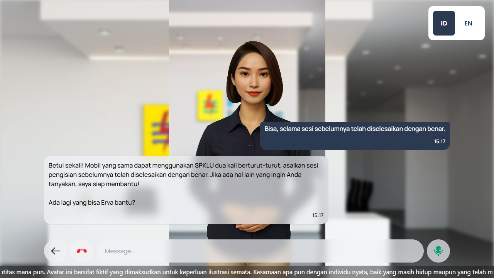 |
0.664 | FAILED | 00:00:11 |
| 93 | Kenapa charging terasa lebih lama dibanding sebelumnya | Waktu charging dapat dipengaruhi kondisi baterai, suhu lingkungan, dan pola penggunaan sebelumnya. | Waktu charging dapat dipengaruhi kondisi baterai, suhu lingkungan, dan pola penggunaan sebelumnya. | Ya, benar sekali! Waktu charging memang dapat dipengaruhi oleh beberapa faktor seperti kondisi baterai, suhu lingkungan, dan pola penggunaan sebelumnya. Semua faktor ini dapat mempengaruhi seberapa cepat atau lambat proses pengisian daya berlangsung. Jika ada yang ingin Anda diskusikan lebih lanjut, jangan ragu untuk bertanya!Ada lagi yang bisa Erva bantu? | Auto: ⚠ Jawaban cukup (similarity: 69.2%). Benar untuk waktu dan charging, tapi kurang lengkap. Perlu . | 0.692 | FAILED | 00:00:11 | |
| 94 | Apakah aman menggunakan SPKLU setiap hari | Aman, selama digunakan sesuai dengan rekomendasi kendaraan. | Aman, selama digunakan sesuai dengan rekomendasi kendaraan. | Tepat sekali! Melakukan charging beberapa kali dalam sehari aman selama dilakukan sesuai dengan rekomendasi kendaraan dan tidak memaksakan kondisi baterai. Jika ada pertanyaan lain atau informasi yang Anda butuhkan, saya dengan senang hati akan membantu!Ada lagi yang bisa Erva bantu? | Auto: ✓ Jawaban baik (similarity: 70.8%). Mencakup poin-poin utama dengan tepat. | 0.708 | PASS | 00:00:11 | |
| 95 | Kenapa aplikasi meminta saya melakukan scan ulang | Scan ulang diperlukan untuk memastikan keamanan dan sinkronisasi sistem. | Scan ulang diperlukan untuk memastikan keamanan dan sinkronisasi sistem. | Benar sekali! Scan ulang memang diperlukan untuk memastikan keamanan dan sinkronisasi sistem berjalan dengan baik. Ini adalah langkah penting untuk menjaga agar semua fungsi tetap optimal dan aman. Jika ada hal lain yang ingin Anda ketahui, silakan beri tahu saya!Ada lagi yang bisa Erva bantu? | Auto: ✓ Jawaban baik (similarity: 73.3%). Mencakup poin-poin utama dengan tepat. | 0.733 | PASS | 00:00:11 | |
| 96 | Apakah saya bisa langsung meninggalkan mobil setelah mencolok charger | Sebaiknya tunggu hingga proses charging benar-benar dimulai sebelum meninggalkan kendaraan. | Sebaiknya tunggu hingga proses charging benar-benar dimulai sebelum meninggalkan kendaraan. | Betul, sebaiknya Anda menunggu hingga proses charging benar-benar dimulai sebelum meninggalkan kendaraan. Ini memastikan bahwa pengisian daya berjalan dengan lancar dan tidak ada masalah yang muncul di awal proses. Jika ada pertanyaan lain atau butuh bantuan lebih lanjut, saya siap membantu!Ada lagi yang bisa Erva bantu? | Auto: ✓ Jawaban baik (similarity: 71.2%). Mencakup sebagian besar informasi. Akan lebih sempurna dengan tunggu. | 0.712 | PASS | 00:00:11 | |
| 97 | Jika saya ragu atau khawatir, harus menghubungi siapa | Untuk bantuan lebih lanjut, silakan gunakan aplikasi PLN Mobile atau hubungi 123. | Untuk bantuan lebih lanjut, silakan gunakan aplikasi PLN Mobile atau hubungi 123. | Betul sekali! Untuk bantuan lebih lanjut, Anda dapat menggunakan aplikasi PLN Mobile atau menghubungi 123. Kedua opsi ini akan membantu Anda mendapatkan dukungan yang diperlukan dengan cepat dan efisien. Jika ada yang ingin Anda tanyakan lebih lanjut, saya siap membantu!Ada lagi yang bisa Erva bantu? | Auto: ✓ Jawaban baik (similarity: 71.6%). Mencakup poin-poin utama dengan tepat. |
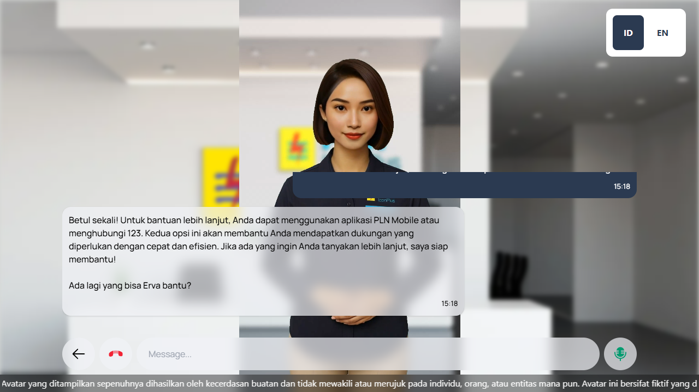 |
0.716 | PASS | 00:00:11 |
| 98 | Kenapa charging terasa berbeda di SPKLU yang sama pada waktu berbeda | Kondisi charging bisa dipengaruhi oleh jumlah kendaraan yang menggunakan SPKLU dan kondisi sistem pada saat itu. | Kondisi charging bisa dipengaruhi oleh jumlah kendaraan yang menggunakan SPKLU dan kondisi sistem pada saat itu. | Tepat sekali! Kondisi charging memang bisa dipengaruhi oleh jumlah kendaraan yang menggunakan SPKLU dan kondisi sistem pada saat itu. Jika banyak kendaraan yang menggunakan SPKLU secara bersamaan, ini bisa mempengaruhi kecepatan dan efisiensi pengisian daya. Selain itu, kondisi sistem juga berperan penting dalam menentukan seberapa optimal proses charging dapat berjalan. Jika ada yang ingin Anda ketahui lebih lanjut, jangan ragu untuk bertanya!Ada lagi yang bisa Erva bantu? | Auto: ✓ Jawaban baik (similarity: 72.9%). Mencakup poin-poin utama dengan tepat. | 0.729 | PASS | 00:00:11 | |
| 99 | Apakah aman jika saya sering pindah pindah SPKLU | Aman, selama setiap sesi charging dihentikan dengan benar sebelum berpindah lokasi. | Aman, selama setiap sesi charging dihentikan dengan benar sebelum berpindah lokasi. | Benar sekali! Aman untuk sering berpindah-pindah SPKLU selama setiap sesi charging dihentikan dengan benar sebelum Anda berpindah lokasi. Ini memastikan bahwa proses pengisian daya telah selesai dengan aman dan tidak ada masalah yang tertinggal. Jika ada pertanyaan lain atau butuh bantuan lebih lanjut, saya siap membantu!Ada lagi yang bisa Erva bantu? | Auto: ✓ Jawaban baik (similarity: 72.9%). Mencakup poin-poin utama dengan tepat. | 0.729 | PASS | 00:00:11 | |
| 100 | Kenapa mobil saya tidak mau menerima charging padahal sebelumnya bisa | Kondisi baterai, suhu, atau sistem kendaraan bisa mempengaruhi kesiapan charging pada waktu tertentu. | Kondisi baterai, suhu, atau sistem kendaraan bisa mempengaruhi kesiapan charging pada waktu tertentu. | Benar sekali! Kondisi baterai, suhu lingkungan, dan sistem kendaraan memang dapat mempengaruhi kesiapan dan kecepatan charging pada waktu tertentu. Misalnya, jika suhu lingkungan terlalu dingin atau panas, ini bisa mempengaruhi efisiensi pengisian daya. Selain itu, kondisi baterai dan sistem kendaraan juga berperan dalam menentukan seberapa cepat dan efektif proses charging dapat berlangsung. Jika ada pertanyaan lain atau butuh informasi lebih lanjut, saya siap membantu!Ada lagi yang bisa Erva bantu? | Auto: ⚠ Jawaban cukup (similarity: 66.6%). Benar untuk kondisi dan baterai, tapi kurang lengkap. Perlu . | 0.666 | FAILED | 00:00:11 |